Énergies macroscopiques
Pour un système de masse m, de vitesse v, à l'altitude z dans le champ de pesanteur terrestre :
Énergie cinétique Ec
m en kg, v en m·s⁻¹, Ec en J
Énergie potentielle Ep
g = 9,81 m·s⁻², z en m, Ep en J
Chaleur latente de changement d'état
On note L, la chaleur latente de changement d'état ou énergie massique de changement d'état. C'est l'énergie thermique absorbée ou libérée lors du changement d'état d'1 kg de corps pur. Elle s'exprime en J·kg⁻¹.
Pour l'eau : Lfusion ≈ 334 kJ·kg⁻¹ et Lvaporisation ≈ 2 260 kJ·kg⁻¹ (à 100 °C sous pression atmosphérique).
🧊 Diagramme de changement d'état — les 6 transformations
Un corps pur peut passer d'un état à un autre par 6 transformations, organisées en triangle solide ⇌ liquide ⇌ gaz : fusion/solidification, vaporisation/liquéfaction, mais aussi sublimation (solide → gaz direct) et condensation (gaz → solide direct, sans passer par l'état liquide).
Dans le sens endothermique (vers un état plus désordonné : fusion, vaporisation, sublimation) : le système absorbe de l'énergie (Q = m×L > 0), le milieu extérieur se refroidit. Dans le sens exothermique (vers un état plus ordonné : solidification, liquéfaction, condensation) : le système libère de l'énergie (Q = m×L < 0), le milieu extérieur se réchauffe.
Loi de Mariotte & volume molaire
Loi de Mariotte : à température constante, le produit P × V d'une quantité de matière de gaz donnée est constant : P × V = constante.
Volume molaire d'un gaz Vm : volume occupé par une mole d'entité chimique à température et pression données. Le volume molaire d'un gaz ne dépend pas de sa nature, mais uniquement de la température et de la pression (Vm ≈ 24,0 L·mol⁻¹ dans les conditions usuelles de 20 °C).
Cette animation relie le comportement macroscopique du gaz (pression, volume) à l'origine microscopique de la pression : en comprimant le volume à température constante, on voit les chocs des particules sur les parois devenir plus fréquents, ce qui fait augmenter P — l'illustration directe de la loi de Mariotte (P×V = constante) par le modèle des chocs microscopiques.
Autotest
Effet de serre
L'atmosphère terrestre est en grande partie transparente au rayonnement solaire visible, mais absorbe une partie du rayonnement infrarouge réémis par le sol. Une partie de cette énergie est renvoyée vers le sol, ce qui contribue à réchauffer la surface terrestre : c'est l'effet de serre.
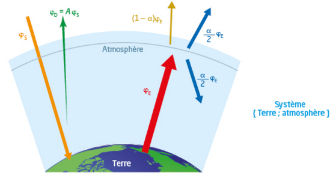
Albédo
L'albédo d'une surface est le rapport entre la puissance du rayonnement qu'elle réfléchit et la puissance du rayonnement incident qu'elle reçoit. C'est un nombre sans dimension compris entre 0 (surface parfaitement absorbante) et 1 (surface parfaitement réfléchissante).
Corps noir et loi de Wien
Un corps noir désigne un objet idéal qui absorbe parfaitement toute l'énergie électromagnétique (toute la lumière, quelle que soit sa longueur d'onde) qu'il reçoit. Cette absorption se traduit par une agitation thermique qui provoque l'émission d'un rayonnement thermique, dit rayonnement du corps noir.
La loi de Wien indique que le produit de la longueur d'onde à laquelle l'émission est maximale (λmax) par la température du corps noir est constant : si la température augmente, λmax diminue (le pic d'émission se déplace vers les courtes longueurs d'onde).
☀️ Animation interactive — Loi de Wien
Fais varier la température du corps noir et observe le déplacement du pic d'émission (λmax) sur le spectre.
🌡️ Activité — Vérifier la loi de Wien avec le simulateur PhET « Blackbody Spectrum »
À l'aide du simulateur PhET « Spectre du corps noir », tu vas mesurer λmax pour plusieurs températures et vérifier que le produit λmax × T reste constant.
- 1Règle la température du corps noir sur 3000 K (curseur ou champ numérique) et repère sur le graphique la longueur d'onde λmax correspondant au maximum de la courbe d'émission.
- 2Recommence pour 4500 K, puis pour 6000 K.
- 3Complète le tableau ci-dessous avec tes 3 mesures.
- 4Calcule le produit λmax × T pour chaque mesure : que constates-tu ?
- 5Compare la couleur dominante affichée par le simulateur à chaque température à ce que tu sais de la couleur des étoiles (une étoile plus chaude paraît plus bleue, une étoile plus froide plus rouge).
| T (K) | 3000 | 4500 | 6000 |
|---|---|---|---|
| λmax (nm) |
Flux thermique
Le flux thermique représente la quantité de chaleur qui traverse une surface par unité de temps. Il est aussi appelé transfert de chaleur et est mesuré en watt par mètre carré (W/m²) lorsqu'il est rapporté à une surface, ou en watt (W) pour un flux global.
Autotest
🔬 Activité 1 — Influence des grandeurs macroscopiques sur un gaz
Objectif (capacité B.O. : relier qualitativement les valeurs des grandeurs macroscopiques mesurées aux propriétés du système à l'échelle microscopique). Utilise la simulation ci-dessous : choisis un gaz, injecte quelques particules avec la pompe, puis manipule le nombre de particules N, la température T et le volume V (paroi mobile) pour observer leur effet sur la pression P mesurée par le manomètre.
Pour chaque étape ci-dessous, écris d'abord ta prédiction, avant de manipuler la simulation pour la vérifier.
À volume V et température T constants, utilise la pompe pour augmenter le nombre N de particules dans l'enceinte. Que devient la pression P mesurée ?
En augmentant N à V et T fixés, les chocs des particules sur les parois deviennent plus fréquents : la pression P augmente.
À nombre N et volume V constants, augmente la température T (bouton chauffage). Observe d'abord l'histogramme des vitesses des particules, puis la pression. Que deviennent la vitesse moyenne et la pression ?
En augmentant T, l'agitation microscopique augmente : la vitesse moyenne des particules augmente. Les chocs sur les parois sont alors plus fréquents et plus énergétiques : la pression P augmente.
À nombre N et température T constants, déplace la paroi mobile pour réduire le volume V de l'enceinte. Que devient la pression P ?
En réduisant V, les particules sont plus rapprochées des parois : les chocs sont plus fréquents (sans que leur vitesse ne change) : la pression P augmente. C'est la loi de Mariotte (P×V = constante à T fixée).
Active l'affichage de l'histogramme des vitesses (icône graphique) et compare deux températures très différentes. Comment la distribution des vitesses évolue-t-elle avec T ?
Plus T est élevée, plus l'histogramme des vitesses est large et décalé vers les grandes vitesses : la température macroscopique traduit directement l'agitation (l'énergie cinétique) microscopique moyenne des particules.
QCM — Ce que révèle la simulation
Trois grandeurs macroscopiques
À l'échelle macroscopique, l'état d'un gaz peut être décrit au moyen de trois grandeurs mesurables : la pression P, la température θ et la masse volumique ρ. Ces grandeurs sont interdépendantes : la variation de l'une modifie la valeur d'au moins une des deux autres.
| Grandeur macro. | Définition / mesure | Origine microscopique | Évolution au niveau microscopique |
|---|---|---|---|
| Température θ | Thermomètre. T = θ + 273,15 (T en K, θ en °C) | Mesure de l'état d'agitation microscopique des particules (énergie cinétique microscopique) | Plus l'agitation augmente, plus la vitesse des particules augmente, plus T mesurée est grande |
| Pression P (Pa) | Manomètre. P = F/S | Chocs des particules microscopiques sur les parois | Plus les chocs sont fréquents, plus P est élevée |
| Masse volumique ρ (kg·m⁻³) | ρ = m / V | Masse des particules contenues dans une unité de volume (état de dispersion) | ρ plus élevée pour un liquide que pour un gaz (entités plus proches) |
💨 Animation — Agitation microscopique et pression
Fais varier la température : observe la vitesse d'agitation des particules et la fréquence des chocs sur les parois (pression).
QCM — Ce que montre l'animation
Hypothèses du modèle du gaz parfait
- Les molécules constituant le gaz sont assimilées à des points matériels (on néglige le volume des molécules).
- Les interactions à distance entre molécules sont négligées (aucune force ne s'exerce sur les particules en dehors des chocs avec les parois de l'enceinte).
Équation d'état du gaz parfait
On appelle gaz parfait un gaz pour lequel la relation suivante est exactement vérifiée :
Cette relation mathématique entre les grandeurs macroscopiques qui décrivent l'état du gaz est nommée équation d'état du gaz parfait.
QCM — Équation d'état
Limites du modèle du gaz parfait
Le modèle du gaz parfait est adapté aux gaz de faible pression et dont les entités ponctuelles n'interagissent pas. Donc si la pression et la masse volumique du gaz sont trop importantes, le modèle du gaz parfait n'est plus adapté.
- Le gaz n'est pas modélisable par un gaz parfait lorsque l'on tient compte des interactions entre entités (interactions électriques de type Van der Waals ou liaisons hydrogène) : elles ne sont alors plus ponctuelles, on les modélise souvent par des sphères.
- Ce modèle permet de décrire le comportement d'un gaz réel dilué, car la distance entre particules est suffisamment grande (de l'ordre du micromètre) pour qu'on puisse négliger les interactions électrostatiques entre elles.
Exercice — Calcul avec l'équation d'état
🌋 Activité 2 — Quelle est la nature de l'énergie interne ?
Les différents états de la matière se distinguent par des énergies de cohésion qui varient selon les interactions entre entités. En mécanique, les énergies cinétique et potentielle sont définies au niveau du centre de masse. À l'échelle microscopique, on peut aussi définir des énergies cinétique et potentielle : agitation des particules (énergie cinétique microscopique) et interactions entre elles, notamment forces électrostatiques (énergie potentielle d'interaction).
Contexte : une fumerolle est une émission de gaz très chaud (entre 100 °C et 500 °C) sortant du sol à proximité d'un volcan. Des espèces chimiques présentes dans le sol se vaporisent sous l'effet de l'activité volcanique et remontent vers la surface ; la « brume » blanche observée atteste de la liquéfaction des gaz émis au contact de l'air plus froid.
- 1. Classer les trois états de la matière selon la valeur de leur énergie cinétique microscopique.
- 2. Préciser ce que devient l'énergie interne de la matière présente dans une chambre magmatique lorsqu'une fumerolle se forme.
- 3. Prédire l'évolution de l'énergie interne des gaz une fois sortis du sol.
- 4. Justifier le terme de « brume » employé.
1. gaz > liquide > solide (agitation microscopique décroissante).
2. L'énergie interne diminue : une partie est libérée sous forme d'énergie thermique lors de la remontée et du refroidissement des gaz.
3. Une fois sortis du sol, les gaz chauds se refroidissent au contact de l'air ambiant plus froid : leur énergie interne diminue.
4. La « brume » correspond à la liquéfaction (condensation) de la vapeur d'eau contenue dans les gaz, sous forme de fines gouttelettes en suspension, lorsque la température chute au contact de l'air extérieur.
Définition de l'énergie interne
Comme la masse volumique, la température ou la pression, l'énergie interne U décrit l'état d'un système thermodynamique. C'est la somme des énergies microscopiques au sein du système : l'énergie cinétique liée à l'agitation thermique et l'énergie potentielle due aux interactions entre molécules.
🏺 Activité 3 — La glacière du désert (« bojito »)
Le « bojito » est une cruche en terre cuite poreuse imprégnée d'eau, jadis utilisée pour refroidir les liquides. L'eau qui imprègne la terre cuite s'évapore et provoque un refroidissement (chutes de température de 5 °C à 20 °C).
Données : capacité thermique massique de l'eau ceau = 4,18 kJ·kg⁻¹·K⁻¹ · énergie massique de vaporisation à 20 °C Lv = 2,4×10³ kJ·kg⁻¹ · capacité thermique de la cruche Ccruche = 2,1 kJ·K⁻¹ · masse volumique de l'eau ρeau = 1,0 kg·L⁻¹ · volume d'eau V = 1,9 L
Schéma des échanges d'énergie du système « cruche + eau »
Q1 : énergie cédée à l'extérieur par vaporisation de l'eau à travers la paroi poreuse (Q1 = m × Lv, avec m la masse d'eau vaporisée). Q2 : énergie reçue de l'extérieur par contact avec l'air ambiant plus chaud. U : énergie interne du système.
Énergie totale d'un système
C'est la somme des énergies à l'échelle macroscopique et à l'échelle microscopique :
Au repos, l'énergie macroscopique est constante (Ec + Ep = 0). Donc la variation de l'énergie totale d'un système au repos à l'échelle macroscopique est égale à sa variation d'énergie interne :
Premier principe de la thermodynamique
En considérant le système au repos à l'échelle macroscopique et fermé (il n'échange pas de matière avec l'extérieur), le premier principe indique que si son énergie varie, c'est qu'il échange avec l'extérieur de l'énergie sous forme de travail (W) ou de transfert thermique (Q) :
- Le travail W est un transfert d'énergie qui s'effectue macroscopiquement, lié au déplacement du point d'application d'une force s'exerçant sur le système.
- Le transfert thermique Q est un transfert d'énergie qui s'effectue microscopiquement entre le système et l'extérieur, spontanément du corps chaud vers le corps froid.
Application — Bilan énergétique d'un réfrigérateur
Exercice p374 n°25 du manuel : identifier les transferts W et Q reçus/cédés par le fluide frigorigène au cours d'un cycle et vérifier le signe de ΔU sur un cycle complet (ΔUcycle = 0).
Capacité thermique massique
La capacité thermique massique c d'un système thermodynamique est l'énergie absorbée par 1 kg de ce système pour élever sa température de 1 °C (soit de 1 K). Elle dépend de la nature du système et de son état physique.
Variation d'énergie interne d'un système incompressible
Si la température augmente, l'énergie cinétique microscopique des entités qui composent le système augmente, donc son énergie interne augmente.
Lorsqu'un système incompressible de masse m, de capacité thermique massique c, passe d'une température initiale Ti à une température finale Tf, sa variation d'énergie interne s'écrit :
Exercice — Variation d'énergie interne
Exercice 2 — Détermination expérimentale de cmétal par calorimétrie
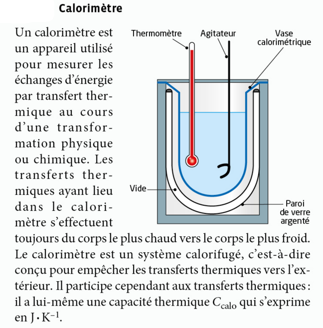
- Étape 1 — Peser une masse meau et une masse mmétal (en g).
- Étape 2 — Mesurer une seule fois la température initiale de l'eau versée dans le calorimètre (elle reste fixe pour toute la série).
- Étape 3 — Immerger l'échantillon de métal porté à la température indiquée, puis relever la température d'équilibre une fois celle-ci stabilisée.
- Répéter l'étape 3 (immersion + relevé), 10 fois au total, sans remesurer θeau.
Une fois θeau mesurée, clique directement sur le métal ci-dessus pour l'immerger dans le calorimètre.
Recopie dans le programme les valeurs que tu as relevées pendant la manipulation (masses en grammes, températures, tes 10 mesures de θéq, et le c théorique du métal choisi). Tout le traitement (moyenne, incertitude, calcul de cmétal...) est déjà écrit : la seule ligne de calcul à compléter toi-même est la conversion des masses de g en kg.
Conclusion : en comparant l'écart |cmétal,exp − cmétal,théo| à l'incertitude u(cmétal) calculée par ton programme, peux-tu conclure que la valeur théorique est compatible avec ta mesure expérimentale ? Justifie, et propose une cause d'erreur expérimentale qui pourrait expliquer un éventuel écart.
On compare l'écart |cexp − cthéo| à l'incertitude u(cmétal) : si |cexp − cthéo| ≤ u(cmétal), les deux valeurs sont compatibles (l'écart peut s'expliquer par la seule dispersion statistique des mesures). Si l'écart est supérieur à u(cmétal), l'incertitude de type A seule ne suffit pas à l'expliquer : il existe probablement une erreur systématique, par exemple des pertes thermiques vers l'extérieur (calorimètre pas parfaitement isolé), qui n'est pas prise en compte par l'incertitude de type A calculée ici.
Les trois modes de transfert thermique
Conduction thermique : principalement dans les solides, l'agitation thermique se transmet de proche en proche dans la matière, sans déplacement de l'ensemble de celle-ci. La partie la plus froide s'échauffe au contact de la partie la plus chaude.
Convection thermique : principalement dans les fluides, l'agitation thermique se transmet de proche en proche dans la matière, avec déplacement de l'ensemble de celui-ci : des courants de fluide.
Rayonnement thermique : dans tout milieu matériel ou dans le vide. L'absorption ou l'émission d'ondes électromagnétiques par la matière en modifient l'agitation thermique.
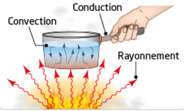
🔥 Animation — Les trois modes de transfert thermique
Autotest
Flux thermique (puissance thermique)
Il permet d'évaluer la vitesse de transfert thermique. Si le transfert thermique Q entre un système et l'extérieur a comme durée Δt, alors le flux thermique noté ɸ est défini par :
Le flux thermique ɸ est aussi appelé puissance thermique, notée Pth. Par convention, il est compté positivement s'il est reçu par le système et négativement s'il est cédé.
Résistance thermique
La résistance thermique Rth caractérise l'opposition d'un milieu au transfert thermique entre deux points. Plus elle est élevée, plus le flux est faible (matériau plus isolant).
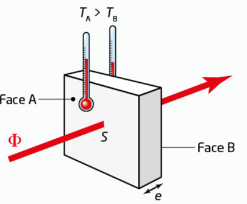
🏠 Activité 4 (Annexe) — Isolation d'un mur
Conductivités thermiques λ (W·m⁻¹·K⁻¹) : air sec 0,025 · laine de verre 0,040 · bois 0,10 à 0,35 · béton plein 1,7 · placoplâtre 0,46 · verre 1,2 · brique 0,84 · polystyrène 0,035 · acier 46.
Exercice — Flux à travers une fenêtre
Hypothèse de Newton
Isaac Newton a remarqué qu'un objet se refroidissait d'autant plus rapidement que la différence de température entre ce corps et le milieu extérieur était importante.
La loi de Newton indique que le taux de variation de température d'un système incompressible, échangeant de l'énergie par un transfert thermique, est proportionnel à la différence entre la température du corps T et celle du milieu extérieur Tth, qui joue le rôle de thermostat :
Résolution de l'équation différentielle
La loi de Newton est une équation différentielle linéaire du premier ordre à coefficients constants avec second membre constant, du type y' = a·y + b, dont la solution générale est y(x) = A·ea·x + B.
- On identifie T(t) = A · e−γ·t + B.
- Quand t → +∞, T → Tth, donc B = Tth.
- À t = 0 s, T = T0, donc T0 = A + Tth, d'où A = T0 − Tth.
L'évolution de la température se traduit par une fonction exponentielle qui tend vers la température du thermostat Tth (décroissante si T0 > Tth, croissante si T0 < Tth).
🥤 Application — Canette de soda
Une canette de soda sortant du réfrigérateur à la température initiale θi = 5 °C se retrouve à l'air libre en été, dans une pièce à θext = 30 °C. On modélise le flux thermique reçu par la canette (masse m, capacité thermique massique c) par la loi de Newton : ɸ = k(θext − θ), avec k une constante positive caractérisant l'échange thermique entre la canette et l'air.
☕ Application — Tasse de café qui refroidit
Une tasse de café, servie à la température initiale θi = 80 °C, refroidit dans une pièce à température ambiante θext = 20 °C. Comme pour la canette, on modélise le flux thermique reçu par la tasse (masse m, capacité thermique massique c) par la loi de Newton : ɸ = k(θext − θ), avec k une constante positive. On donne τ = m·c/k = 480 s.
2. Résoudre cette équation différentielle : déterminer les constantes A et B de la solution générale θ(t) = A·e−t/τ + B à l'aide des conditions aux limites (t→+∞ et t=0), puis donner l'expression complète de θ(t).
3. Calculer l'instant t55°C pour lequel la température du café atteint 55 °C (température jugée « buvable »).
Loi de Stefan-Boltzmann
Tout corps de température non nulle perd de l'énergie par rayonnement. La loi de Stefan-Boltzmann définit la relation entre le flux thermique par unité de surface d'un objet et sa température, l'objet étant considéré comme un « corps noir » (objet idéal qui émet sous forme de rayonnement toute l'énergie qu'il reçoit).
🌍 Application — Effet de serre
Le fonctionnement d'une serre ne repose pas sur le principe de l'effet de serre atmosphérique, mais sur la disparition des échanges thermiques dus à la convection entre la terre et l'air ambiant. On considère un lopin de terre sans serre, transmettant à l'air ambiant φconv = 102 W·m⁻² par convection. Donnée : température moyenne de la surface de la Terre T = 288 K.
Modèle quantitatif de l'effet de serre atmosphérique
En reprenant le bilan radiatif du système {Terre ; atmosphère} vu en prérequis (flux solaire φS, albédo A, coefficient d'absorption atmosphérique α), on peut établir la température d'équilibre TT de la surface terrestre. À l'équilibre, le flux reçu par la Terre — flux solaire absorbé (1−A)·φS et rayonnement atmosphérique redescendant (α/2)·φE — est égal au flux qu'elle émet (loi de Stefan-Boltzmann, φE = k×TT⁴) :
🌡️ Application — Effet de serre naturel : quelle amplitude de réchauffement ?
On donne le flux solaire incident φS = 342 W·m⁻², l'albédo terrestre A = 0,30, et k = σ = 5,67×10⁻⁸ W·m⁻²·K⁻⁴.
Sans atmosphère absorbante, la température moyenne de surface serait d'environ −18 °C (255 K) ; avec l'atmosphère réelle (α = 0,77), elle atteint environ 15 °C (288 K), proche de la valeur moyenne observée. L'effet de serre naturel réchauffe donc la surface terrestre d'environ 33 °C, ce qui rend la vie telle qu'on la connaît possible sur Terre — à distinguer de l'effet de serre additionnel lié aux activités humaines, qui modifie α et renforce ce réchauffement.
Comment interpréter microscopiquement l'état d'équilibre macroscopique identique de deux gaz composés d'entités différentes ?
📄 Documents
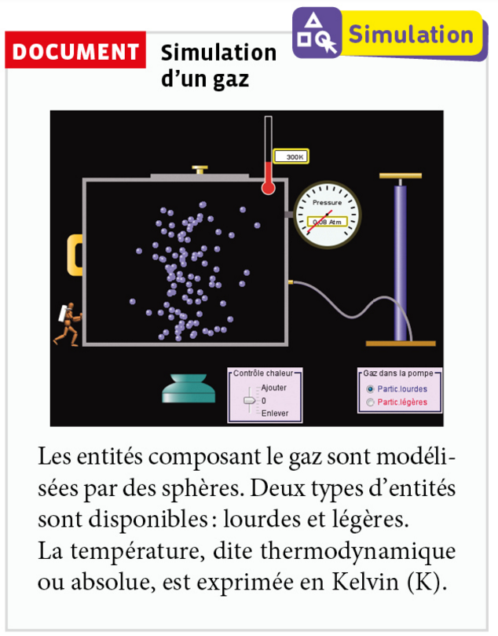
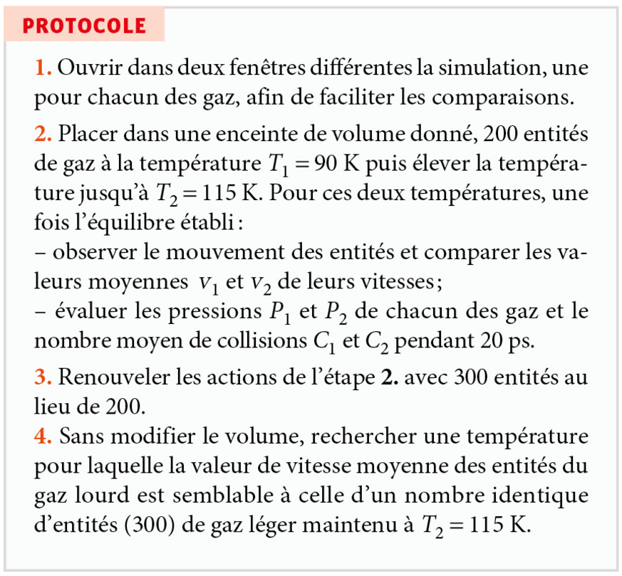
Une fois l'animation lancée, cliquer sur « Explore » pour obtenir la simulation la plus simple (ou « Idéal » pour une simulation un peu plus élaborée), puis « collision counter » et sélectionner 20 ps par exemple. Le nombre de particules peut être choisi en cliquant sur « + » devant le mot particules.
1 · Connaître
Rappeler le lien entre les grandeurs décrivant un fluide à l'échelle macroscopique (température T et pression P) et les propriétés (vitesse moyenne et fréquence des collisions) des entités qui le décrivent à l'échelle microscopique.
2 · Réaliser
Réaliser le protocole en notant les résultats.
3 · Analyser-Raisonner
a. Présenter l'effet sur la pression P et la température T d'une augmentation :
– de la valeur de la vitesse moyenne v des entités à nombre d'entités fixé ;
– du nombre moyen d'entités à T fixée ;
– du nombre moyen de collisions C pendant une durée donnée à nombre d'entités fixé ;
– du nombre moyen de collisions C pendant une durée donnée à T fixée.
b. En se référant à l'étape 4. du protocole, déterminer, parmi les propriétés suivantes d'un gaz à l'échelle microscopique, celle qui est reliée à la température : énergie cinétique moyenne des particules, distance moyenne entre les particules, fréquence des collisions.
4 · Communiquer (Grand oral)
Réaliser une synthèse pour rendre compte, à l'aide d'arguments microscopiques, de la pression identique de deux gaz de nature différente mais de même quantité de matière, occupant un même volume à une même température.
Quelles seraient les conséquences sur la composition de l'atmosphère si le méthane venait à s'échapper de ces réserves ?
1 · S'approprier
Visionner la vidéo d'introduction puis indiquer le danger potentiel des hydrates de gaz.
2 · Réaliser
a. À l'aide des données, calculer la quantité de matière de chacune des espèces présentes dans l'atmosphère.
b. À l'aide des données, calculer la quantité de matière de méthane libérée dans l'atmosphère si seulement 0,0001 % des réserves mondiales d'hydrates de méthane des fonds marins et des sols gelés arctiques était concerné.
c. Le dioxyde de carbone contenu dans l'atmosphère terrestre contribue à l'effet de serre en absorbant le rayonnement infrarouge émis par le sol et en le réémettant en partie vers lui. En supposant que cette masse de méthane présente une capacité d'effet de serre 25 fois supérieure à celle du dioxyde de carbone, estimer la composition équivalente en dioxyde de carbone de l'atmosphère suite à la libération de la quantité de matière de méthane calculée en b.
3 · Valider
Exploiter le résultat de la question précédente pour justifier le danger de ce réchauffement climatique.
1 · S'approprier — Les hydrates de méthane constituent une réserve considérable de méthane, un puissant gaz à effet de serre. Leur déstabilisation (réchauffement des fonds marins, dégel du permafrost) pourrait libérer une grande quantité de méthane dans l'atmosphère et amplifier fortement l'effet de serre, donc le réchauffement climatique.
2.a — Avec P₀ = 1013 hPa = 1,013×10⁵ Pa, V₀ = 4,03×10¹⁸ m³ et T = 293 K : n(atm) = P₀V₀/(RT) ≈ 1,68×10²⁰ mol. Soit, par espèce : n(N₂) ≈ 1,31×10²⁰ mol ; n(O₂) ≈ 3,51×10¹⁹ mol ; n(Ar) ≈ 1,57×10¹⁸ mol ; n(CO₂) ≈ 6,8×10¹⁶ mol.
2.b — Volume total des réserves : 400 milliards de km³ = 4×10¹¹ km³ = 4×10²⁰ m³. Pour 0,0001 % : V(CH₄) = 4×10²⁰ × 1×10⁻⁶ = 4×10¹⁴ m³. Avec les mêmes conditions (P₀, T) : n(CH₄) = P₀V(CH₄)/(RT) ≈ 1,66×10¹⁶ mol.
2.c — Quantité de matière équivalente en CO₂ apportée par le méthane : 25 × n(CH₄) ≈ 4,16×10¹⁷ mol. En l'ajoutant au CO₂ déjà présent (6,8×10¹⁶ mol), on obtient environ 4,84×10¹⁷ mol, soit une proportion d'environ 0,29 % de l'atmosphère (contre 0,0408 % initialement).
3 · Valider — La composition équivalente en CO₂ est multipliée par un facteur d'environ 7 par rapport à la situation actuelle, alors qu'on n'a considéré la libération que de 0,0001 % des réserves d'hydrates de méthane. Cela illustre le danger représenté par ces réserves : une fraction infime suffirait à amplifier considérablement l'effet de serre et donc le réchauffement climatique, ce qui justifie la surveillance de la stabilité de ces gisements face au réchauffement des océans et au dégel du permafrost.
Objectif : citer les différentes contributions microscopiques à l'énergie interne d'un système.
📄 Documents
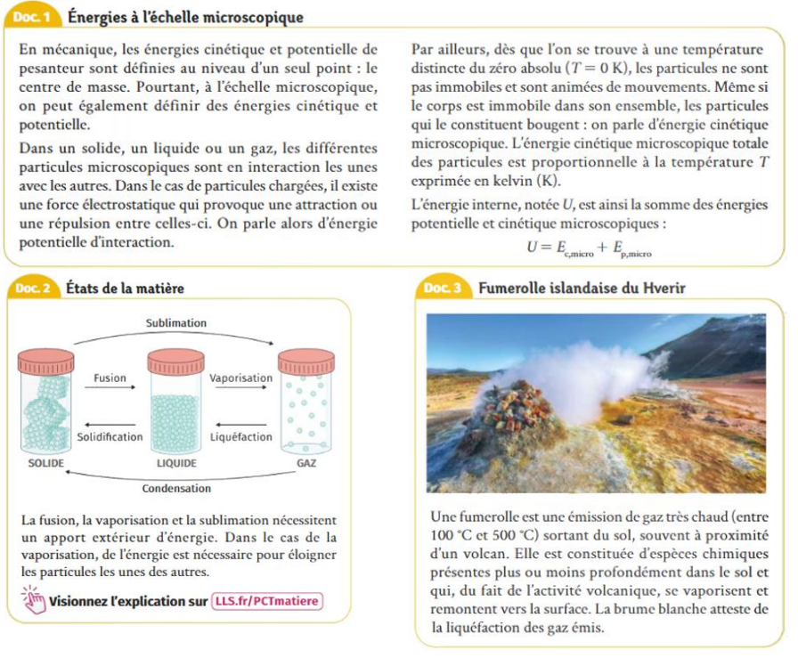
1 · Question
Pour un corps donné, classer les trois états de la matière selon la valeur de leur énergie cinétique microscopique.
2 · Question
Préciser ce que devient l'énergie interne de la matière présente dans une chambre magmatique lorsqu'une fumerolle se forme.
3 · Question
Prédire l'évolution de l'énergie interne des gaz une fois sortis du sol.
4 · Question
Justifier le terme de « brume » employé dans le doc. 3.
Le « bojito » est une cruche en terre cuite, jadis utilisée dans les régions méditerranéennes pour refroidir les liquides (eau et vin).
Doc 1 — Le principe du « bojito »
Le « bojito » est composé d'un pot de terre cuite poreux imprégné d'eau. De la même manière que l'on ressent le froid quand on sort d'un bain, l'eau qui imprègne la terre cuite s'évapore et provoque un refroidissement. En pratique, on peut observer des chutes de températures de l'ordre de 5 °C à 20 °C !
📄 Documents
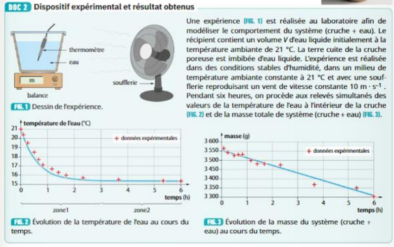
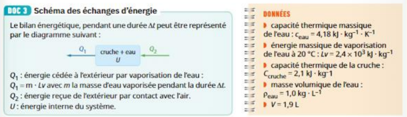
Questions préliminaires
1. Calculer la variation d'énergie d'un volume V = 1,9 L d'eau dont la température diminue de 1 °C.
2. Déterminer la valeur de la masse d'eau du système (cruche + eau) qui se vaporise au cours du temps, en gramme par heure.
3. Justifier l'existence des deux zones de la figure 3 (Doc 2).
🧩 Le problème à résoudre
Pour prévoir la température du bojito au bout de la première heure, peut-on modéliser le fonctionnement en négligeant l'énergie reçue Q₂ de l'extérieur sur cette durée ? Il est attendu une prise d'initiative et une présentation de la démarche suivie même si elle n'a pas abouti.
Problématique : comment caractériser le transfert thermique à travers une paroi ?
Compétences mises en œuvre — Cognitives : exploiter la relation entre flux thermique, résistance thermique et écart de température (l'expression de la résistance étant donnée). Démarche scientifique : S'approprier (rechercher et organiser l'information), Réaliser (effectuer un calcul), Communiquer (présenter une démarche argumentée, synthétique et cohérente).
📄 Documents
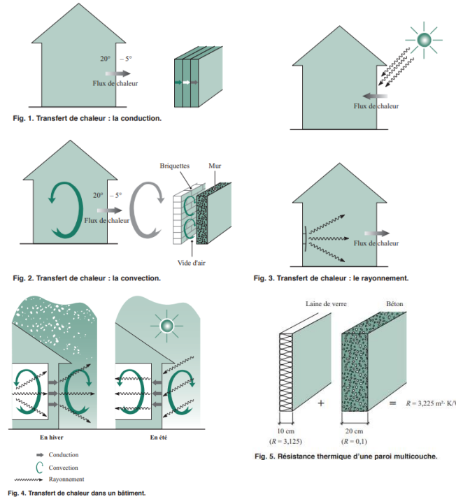
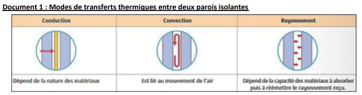
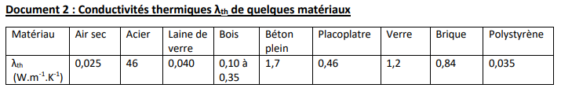
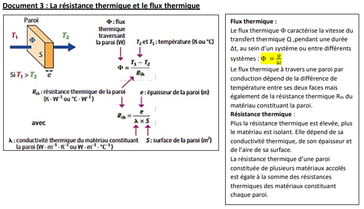
Partie 1
1. Tous les types de parois utilisées dans l'habitat sont-ils concernés par les trois modes de transferts thermiques ? Justifier.
2. Par analyse dimensionnelle, justifier l'unité de la conductivité thermique λ.
3. Justifier qu'à épaisseur égale, une paroi en bois isole davantage qu'une paroi en béton plein.
Partie 2
4. Calculer la résistance thermique Rth1 d'un mur de 30 m² composé successivement d'une épaisseur de 10 cm de brique, 5,0 cm de laine de verre et 20 cm de béton. Puis calculer la résistance thermique Rth2 du même mur si les matériaux étaient mélangés. Comparer les deux valeurs.
5. La température extérieure étant de 6 °C et celle intérieure de 19 °C, dans quel sens s'effectue le transfert thermique ? Calculer la valeur des flux Φ₁ et Φ₂ du mur dans les deux situations précédentes. Même question si à l'intérieur il fait 25 °C et à l'extérieur 39 °C.
6. Au bout d'une heure, quelle est la valeur du transfert thermique en hiver pour les deux situations ? Quel mur permet une meilleure isolation thermique ? Justifier.
Partie 3
7. Calculer la résistance thermique d'une fenêtre simple vitrage en verre ayant une épaisseur de 5,0 mm et une surface d'aire de 1,0 m².
8. Calculer la résistance thermique d'une double fenêtre, sachant que les deux fenêtres, distantes de 10 cm, ont les mêmes caractéristiques que celles données dans la question précédente.
9. Comparer le flux thermique d'une double fenêtre à celui d'une fenêtre simple vitrage. Conclure en indiquant si le choix entre ces deux possibilités est esthétique ou énergétique, et en précisant le(s) mode(s) de transfert thermique qui n'a (n'ont) pas été pris en compte ici.
Partie 1
1. Non : chaque mode de transfert dépend d'une condition particulière (Doc 1). La conduction concerne tout matériau solide constituant la paroi ; la convection nécessite un mouvement d'air, donc seulement les parois comportant une lame d'air (ex. vide d'air entre briquettes, Fig. 2) ; le rayonnement dépend de la capacité du matériau à absorber/réémettre un rayonnement, donc concerne surtout les parois vitrées ou exposées au soleil (Fig. 3). Une paroi opaque et pleine, sans lame d'air, n'est donc concernée que par la conduction (et un peu de rayonnement en surface), pas par la convection interne.
2. Rth = e/(λ×S) ⇒ λ = e/(Rth×S). En unités SI : λ = m/([K·W⁻¹]×[m²]) = m·W/(K·m²) = W·m⁻¹·K⁻¹, ce qui correspond bien à l'unité donnée dans le Doc 2.
3. λbois (0,10 à 0,35 W·m⁻¹·K⁻¹) est nettement plus faible que λbéton plein (1,7 W·m⁻¹·K⁻¹). Or, à e et S fixées, Rth = e/(λ×S) est d'autant plus grande que λ est petit. Le bois possède donc une résistance thermique plus élevée que le béton à épaisseur égale, donc il isole davantage (moins de flux de chaleur pour un même écart de température).
Partie 2
4. Couches successives (S = 30 m² pour chaque couche) : Rth,brique = 0,10/(0,84×30) ≈ 4,0×10⁻³ K·W⁻¹ ; Rth,laine = 0,05/(0,040×30) ≈ 4,17×10⁻² K·W⁻¹ ; Rth,béton = 0,20/(1,7×30) ≈ 3,9×10⁻³ K·W⁻¹. En les additionnant (couches accolées, Doc 3) : Rth1 ≈ 5,0×10⁻² K·W⁻¹.
Si les mêmes matériaux (mêmes épaisseurs) sont répartis côte à côte, chacun sur un tiers de la surface (S = 10 m² chacun) : Rth,brique' ≈ 1,19×10⁻² K·W⁻¹ ; Rth,laine' ≈ 0,125 K·W⁻¹ ; Rth,béton' ≈ 1,18×10⁻² K·W⁻¹. Les résistances se combinent alors comme des résistances en parallèle : 1/Rth2 = 1/Rth,brique' + 1/Rth,laine' + 1/Rth,béton', d'où Rth2 ≈ 5,6×10⁻³ K·W⁻¹.
Rth1 est environ 9 fois plus grande que Rth2 : la règle d'additivité du Doc 3 ne s'applique qu'à des couches empilées traversées successivement par le même flux ; répartis côte à côte, les matériaux offrent des chemins de moindre résistance thermique (ici, la brique et le béton, peu isolants, court-circuitent l'effet isolant de la laine de verre limitée à un tiers de la surface), d'où une bien moins bonne isolation globale.
5. Le transfert thermique s'effectue toujours de la zone chaude vers la zone froide. Cas 1 (intérieur 19 °C > extérieur 6 °C) : le transfert se fait de l'intérieur vers l'extérieur, avec ΔT = 13 K. Φ₁ = 13/Rth1 ≈ 2,6×10² W ; Φ₂ = 13/Rth2 ≈ 2,3×10³ W.
Cas 2 (extérieur 39 °C > intérieur 25 °C) : le transfert se fait cette fois de l'extérieur vers l'intérieur, avec ΔT = 14 K. Φ₁' ≈ 2,8×10² W ; Φ₂' ≈ 2,5×10³ W.
6. En hiver (cas 1, Δt = 3 600 s) : Q₁ = Φ₁×Δt ≈ 9,4×10⁵ J (mur Rth1) ; Q₂ = Φ₂×Δt ≈ 8,3×10⁶ J (mur Rth2). Le mur construit en couches successives (Rth1) perd environ 9 fois moins d'énergie : c'est donc lui qui isole le mieux, ce qui confirme le résultat de la question 4.
Partie 3
7. Rth = e/(λverre×S) = 0,0050/(1,2×1,0) ≈ 4,2×10⁻³ K·W⁻¹.
8. Résistance de la lame d'air : Rth,air = 0,10/(0,025×1,0) = 4,0 K·W⁻¹. En additionnant les trois couches accolées (vitre + air + vitre) : Rth,double = 2×4,2×10⁻³ + 4,0 ≈ 4,01 K·W⁻¹.
9. Pour un même écart de température, Φ = ΔT/Rth : le rapport des flux est égal à l'inverse du rapport des résistances, soit Rth,double/Rth,simple ≈ 4,01/4,2×10⁻³ ≈ 960. Le flux thermique à travers une fenêtre simple vitrage est donc environ 960 fois plus grand qu'à travers une double fenêtre : c'est en réalité la fine lame d'air, très peu conductrice, qui assure l'essentiel de l'isolation (le verre lui-même isole peu). Le choix du double vitrage est donc avant tout énergétique (et non esthétique). Le modèle utilisé (Doc 3) ne prend en compte que la conduction : les phénomènes de convection (mouvements d'air, notamment dans la lame d'air ou au contact des vitres) et de rayonnement (échanges radiatifs à travers le verre) ne sont pas modélisés ici, alors qu'ils contribuent aussi, en réalité, au transfert thermique à travers une fenêtre.
Réponse à la problématique — Le transfert thermique à travers une paroi peut être caractérisé par sa résistance thermique Rth, qui dépend de la nature du matériau (conductivité λ), de son épaisseur e et de sa surface S, ainsi que par le flux thermique Φ qui en résulte pour un écart de température donné (Φ = ΔT/Rth). Plus la résistance thermique est élevée, plus la paroi est isolante et plus les pertes énergétiques (le flux) sont faibles pour un même écart de température — d'où l'intérêt, pour les architectes, d'empiler des couches de matériaux isolants (laine de verre, lame d'air) plutôt que de les juxtaposer.
Ce dispositif de double fenêtre relève-t-il d'un choix esthétique ou énergétique ?
📄 Documents
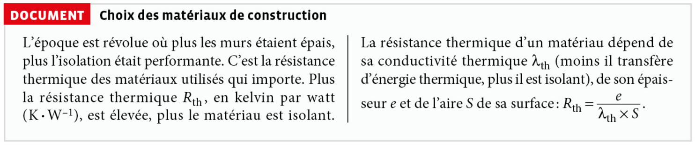
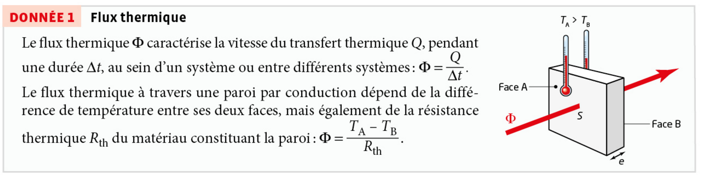
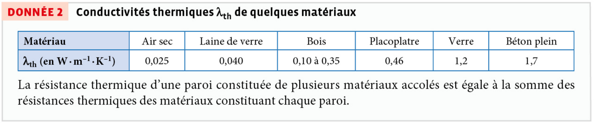
1 · Analyser-Raisonner
a. Exploiter la formule donnée dans le document afin d'identifier l'influence de différentes grandeurs sur la valeur de la résistance thermique.
b. Vérifier l'homogénéité de cette formule (→ Fiche méthode 4, p. 517).
2 · Réaliser
a. Calculer la résistance thermique d'une fenêtre simple vitrage en verre ayant une épaisseur de 5 mm et une surface d'aire 1 m².
b. Calculer la résistance thermique d'une double fenêtre, sachant que les deux fenêtres, distantes de 10 cm, ont les mêmes caractéristiques que celles données à la question précédente.
3 · Valider
Comparer le flux thermique d'une double fenêtre à celui d'une fenêtre simple vitrage. Conclure en indiquant si le choix entre ces deux possibilités est esthétique ou énergétique et en précisant le(s) mode(s) de transfert thermique qui n'a (n'ont) pas été pris en compte ici.
1.a — Rth = e/(λth×S) : la résistance thermique est proportionnelle à l'épaisseur e (plus la paroi est épaisse, plus elle isole) et inversement proportionnelle à la conductivité thermique λth (plus le matériau conduit la chaleur, moins il isole) et à la surface S (plus la surface d'échange est grande, plus les pertes sont importantes, donc moins la résistance globale est élevée).
1.b — λ = e/(Rth×S) ⇒ Rth = e/(λ×S). En unités SI : Rth = m/([W·m⁻¹·K⁻¹]×[m²]) = m/(W·m·K⁻¹) = K/W = K·W⁻¹, ce qui correspond bien à l'unité annoncée dans le document. La formule est donc homogène.
2.a — Rth,simple = e/(λverre×S) = 0,0050/(1,2×1,0) ≈ 4,2×10⁻³ K·W⁻¹.
2.b — Résistance de la lame d'air : Rth,air = 0,10/(0,025×1,0) = 4,0 K·W⁻¹. Résistance totale (vitre + air + vitre, couches accolées) : Rth,double = 2×4,2×10⁻³ + 4,0 ≈ 4,01 K·W⁻¹.
3 — Pour un même écart de température, Φ = ΔT/Rth : le rapport des flux est l'inverse du rapport des résistances, soit Rth,double/Rth,simple ≈ 4,01/4,2×10⁻³ ≈ 960. Le flux thermique à travers une fenêtre simple vitrage est donc environ 960 fois plus grand qu'à travers une double fenêtre : c'est la fine lame d'air, très peu conductrice, qui assure l'essentiel de l'isolation (le verre lui-même isole peu). Ce dispositif relève donc avant tout d'un choix énergétique (et non esthétique). Le modèle utilisé ne prend en compte que la conduction : la convection (mouvements d'air dans la lame d'air ou au contact des vitres) et le rayonnement (échanges radiatifs à travers le verre) ne sont pas modélisés ici, alors qu'ils interviennent aussi en réalité dans le transfert thermique à travers une fenêtre.
Quels modèles permettent d'estimer l'évolution de la température à la surface de la Terre ?
📄 Documents
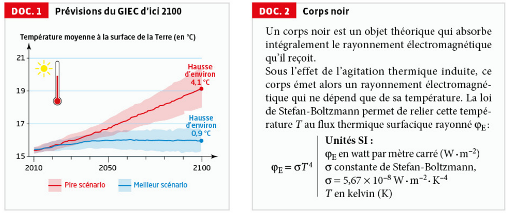
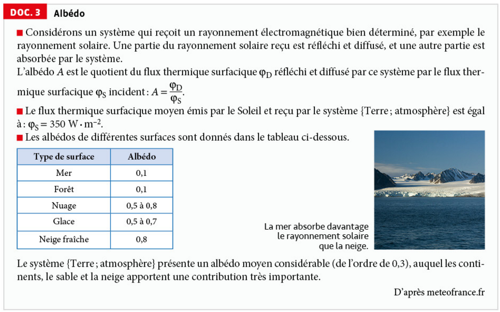
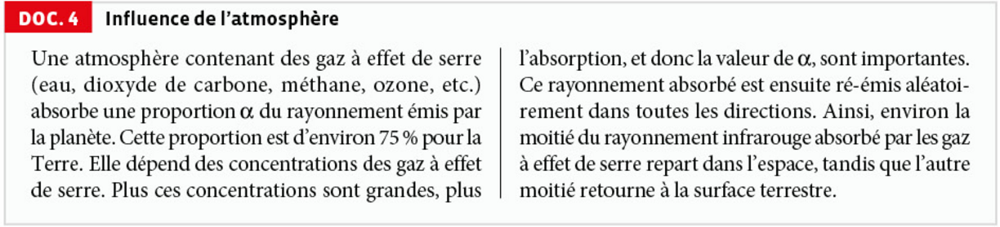
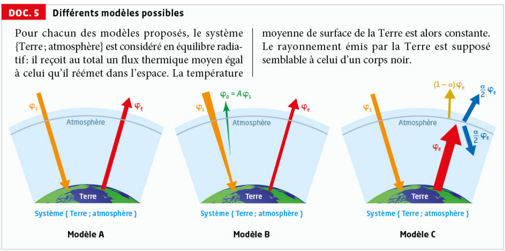
1 · S'approprier
Associer chacun des modèles présentés dans le Doc 5 au(x) Doc. 2, 3 et 4 correspondant(s).
2 · Analyser-Raisonner (différencié)
a. Dans le cadre du modèle A : utiliser la condition d'équilibre radiatif décrite dans le Doc 5 pour déterminer la valeur du flux thermique surfacique φE rayonné par la surface terrestre ; en déduire la valeur de la température moyenne de surface estimée dans le cadre du modèle A puis commenter le résultat obtenu.
b. Dans le cadre du modèle B ou du modèle C : utiliser la condition d'équilibre radiatif décrite dans le Doc 5 pour établir la relation entre le flux thermique surfacique reçu du Soleil φS, le flux thermique surfacique rayonné par la surface terrestre et l'albédo A (pour le modèle B), ou la proportion α du flux thermique surfacique absorbé par l'atmosphère (pour le modèle C) ; en déduire la valeur de la température moyenne de la surface terrestre TT,B ou TT,C estimée dans le cadre du modèle étudié puis commenter le résultat obtenu.
3 · Communiquer (Grand oral)
Présenter oralement le modèle étudié (B ou C) et les résultats obtenus aux élèves qui ont traité l'autre modèle.
4 · Valider
a. Montrer qu'un quatrième modèle, tenant compte à la fois de l'albédo et de l'effet de serre, permet d'obtenir l'expression suivante de la température moyenne de la surface terrestre :
TT,D = [ (2×(1−A)) / ((2−α)×σ) × φS ]1/4
Calculer TT,D et conclure.
b. En se basant sur ce quatrième modèle et ses résultats, commenter l'effet de l'effet de serre et de l'albédo sur la température moyenne de la surface terrestre.
1. Modèle A (aucune grandeur autre que φS et φE) se réfère uniquement au Doc 2 (corps noir, loi de Stefan-Boltzmann). Modèle B (fait intervenir A) se réfère aux Doc 2 et 3 (corps noir + albédo). Modèle C (fait intervenir α) se réfère aux Doc 2 et 4 (corps noir + effet de serre).
2.a — Modèle A : à l'équilibre radiatif, φE = φS = 350 W·m⁻². D'après la loi de Stefan-Boltzmann, TT,A = (φE/σ)^(1/4) = (350/5,67×10⁻⁸)^(1/4) ≈ 280 K (soit environ 7 °C). Ce modèle, qui ne tient compte ni de l'albédo ni de l'effet de serre, surestime largement la température réelle moyenne de la Terre (environ 15 °C) — mais reste étonnamment proche, ce qui montre que les deux effets négligés se compensent partiellement en réalité.
2.b — Modèle B (albédo seul) : à l'équilibre, φE = (1−A)·φS. Avec A ≈ 0,3 : φE = 0,7×350 = 245 W·m⁻², d'où TT,B = (245/σ)^(1/4) ≈ 256 K (soit environ −17 °C). En ne tenant compte que de la réflexion du rayonnement solaire (sans effet de serre), ce modèle sous-estime fortement la température réelle : il correspond en fait à la température de rayonnement effective de la Terre vue depuis l'espace, bien plus basse que la température de surface.
Modèle C (effet de serre seul) : à l'équilibre, le flux qui s'échappe réellement vers l'espace doit égaler φS : (1−α/2)·φE = φS, soit φE = φS/(1−α/2). Avec α = 0,75 : φE = 350/0,625 = 560 W·m⁻², d'où TT,C = (560/σ)^(1/4) ≈ 315 K (soit environ 42 °C). En ne tenant compte que de l'effet de serre (sans albédo), ce modèle surestime fortement la température réelle.
3. Les deux modèles donnent des résultats opposés et tous deux éloignés de la réalité (−17 °C pour B, +42 °C pour C, contre environ +15 °C réellement observés) : cela montre qu'aucun des deux effets, pris isolément, ne suffit à rendre compte du bilan radiatif réel de la Terre — les deux phénomènes doivent être combinés.
4.a — En combinant les deux effets : la surface reçoit (1−A)·φS du Soleil et (α/2)·φE renvoyé par l'atmosphère (effet de serre), et réémet φE ; à l'équilibre du système {Terre ; atmosphère}, le flux qui s'échappe réellement vers l'espace est (1−α/2)·φE, qui doit égaler le flux solaire absorbé (1−A)·φS : (1−α/2)·φE = (1−A)·φS, soit φE = [2(1−A)/(2−α)]·φS. En appliquant la loi de Stefan-Boltzmann, on retrouve bien TT,D = [2(1−A)/((2−α)σ) × φS]^(1/4).
Application numérique : φE = [2×0,7/(2−0,75)]×350 = [1,4/1,25]×350 = 392 W·m⁻², d'où TT,D = (392/σ)^(1/4) ≈ 288 K (soit environ 15 °C) — une valeur très proche de la température moyenne de surface réellement observée, ce qui valide ce modèle combiné.
4.b — L'albédo (modèle B, T ≈ −17 °C) a un effet refroidissant : en réfléchissant une partie du rayonnement solaire, il diminue l'énergie effectivement absorbée par le système {Terre ; atmosphère}. L'effet de serre (modèle C, T ≈ 42 °C) a au contraire un effet réchauffant : en renvoyant vers le sol une partie du rayonnement infrarouge émis par la Terre, il augmente l'énergie effectivement reçue par la surface. Ces deux effets, opposés, se compensent partiellement : c'est leur combinaison (modèle D, T ≈ 15 °C) qui permet de retrouver une température proche de la réalité, ce qui souligne qu'une modification de l'un des deux paramètres (par exemple une augmentation des gaz à effet de serre, donc de α) rompt cet équilibre et entraîne un réchauffement climatique.
Exercice 14 : Définir un état d'équilibre
La propagation d'un son dans un tuyau induit des variations de pression dans l'air qui peuvent être modélisées par le schéma ci-contre.
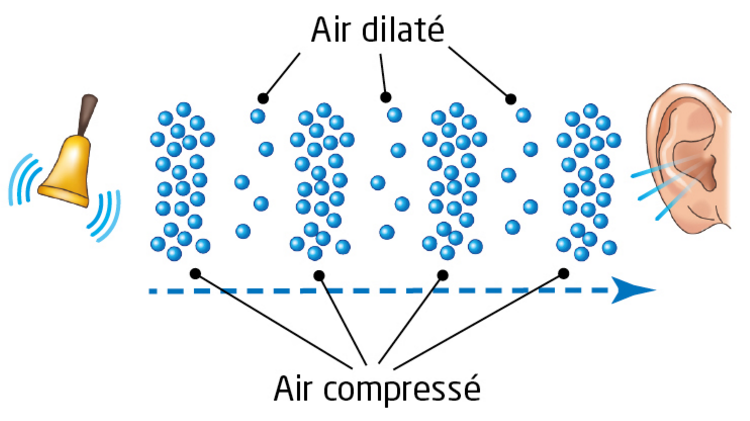
a. Dans les zones d'air compressé, les entités microscopiques (molécules) sont plus rapprochées les unes des autres : leur densité locale est plus grande, elles entrent en collision plus fréquemment, ce qui correspond à une pression locale plus élevée. Dans les zones d'air dilaté, les entités sont au contraire plus espacées, entrent en collision moins fréquemment, ce qui correspond à une pression locale plus faible. La variation macroscopique de pression observée dans le tuyau reflète donc directement une variation microscopique de la densité (et donc de la fréquence des chocs) des entités qui constituent l'air.
b. Non, l'air contenu dans le tuyau ne peut pas être considéré à l'équilibre : à l'équilibre, les grandeurs macroscopiques (pression, température, densité) d'un système sont uniformes dans l'espace et constantes dans le temps. Or ici, la pression varie d'un point à un autre du tuyau (alternance de zones compressées et dilatées) et cette répartition se déplace au cours du temps (propagation de l'onde sonore) : il s'agit d'un état hors équilibre, traversé par une perturbation qui se propage.
Exercice 15 : Interpréter une expérience
Une bouteille est vidée du liquide qu'elle contient et un ballon de baudruche souple est placé sur son ouverture. La bouteille est chauffée en utilisant le dispositif ci-contre et la pression dans la bouteille ne change pas au cours de l'expérience.
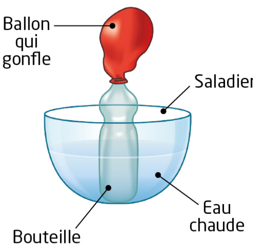
L'eau chaude du saladier transfère de l'énergie thermique à l'air contenu dans la bouteille : la température de ce gaz augmente. À l'échelle microscopique, cela se traduit par une augmentation de l'agitation des molécules d'air, qui se déplacent en moyenne plus vite (énergie cinétique microscopique plus grande).
Or l'énoncé précise que la pression dans la bouteille ne change pas au cours de l'expérience. La pression étant liée à la fréquence et à la « violence » des chocs des molécules sur les parois (ou sur le ballon), une agitation plus grande tendrait, à volume fixé, à faire augmenter la pression. Pour que la pression reste constante malgré cette agitation accrue, il faut que les molécules d'air disposent d'un plus grand volume pour se déplacer, ce qui diminue d'autant la fréquence des chocs par unité de surface.
C'est précisément ce qui se produit : le gaz chauffé repousse la paroi souple du ballon et occupe un volume plus grand (celui de la bouteille plus celui du ballon gonflé), ce qui permet à la pression de rester constante malgré l'augmentation de la température et de l'agitation microscopique des molécules — conformément à l'équation d'état du gaz parfait PV = nRT, à P et n constants, V augmente lorsque T augmente.
Exercice 16 : Relier la température aux propriétés microscopiques
Aux faibles pressions, la théorie cinétique des gaz décrit la température comme une fonction croissante de l'énergie cinétique moyenne des entités constituant le gaz, Ec = ½ mentitév², v² étant la moyenne des carrés des vitesses des entités. Les valeurs suivantes sont données pour différents gaz :
| Gaz | Masse atomique (en kg) | v (en m·s⁻¹) |
|---|---|---|
| He | 6,65×10⁻²⁷ | 1000 |
| N₂ | 4,65×10⁻²⁶ | 519 |
| O₂ | 5,31×10⁻²⁶ | 480 |
a. Calcul de l'énergie cinétique microscopique Ec = ½mv² pour chaque gaz :
La température étant une fonction croissante de Ec, on obtient, dans l'ordre croissant des températures : T(He) < T(O₂) < T(N₂).
b. Cette phrase est incomplète, voire trompeuse si l'on souhaite comparer l'agitation thermique (donc la température) de gaz différents. En effet, si l'on classait les gaz uniquement par leur vitesse v, on obtiendrait He (1000 m·s⁻¹) > N₂ (519 m·s⁻¹) > O₂ (480 m·s⁻¹) : l'hélium serait alors le gaz « le plus chaud ». Or le classement obtenu à partir de l'énergie cinétique Ec = ½mv² (question a.) montre exactement l'inverse pour l'hélium : c'est le gaz dont la température est la plus basse, alors même que ses entités sont les plus rapides !
Cela s'explique par le fait que l'énergie cinétique microscopique — et donc la température — ne dépend pas de la vitesse seule, mais du produit de la masse de l'entité par le carré de sa vitesse. L'hélium, très léger, doit se déplacer beaucoup plus vite que le diazote ou le dioxygène, bien plus massifs, pour transporter une même énergie cinétique. La température ne peut donc être comparée entre des gaz de nature différente qu'à partir de l'énergie cinétique moyenne de leurs entités, et non à partir de leur seule vitesse.
Exercice 25 : Dissoudre un gaz
Un ballon de volume V₀ = 250 mL est rempli de chlorure d'hydrogène gazeux HCl(g) et d'air à la pression P₀ = 1,013×10⁵ Pa. Le bouchon du ballon est traversé par un tuyau souple fermé par une pince. L'extrémité du tuyau est plongée dans un cristallisoir qui contient de l'eau distillée et quelques gouttes d'hélianthine qui se colorent en rouge lorsque le pH est inférieur à 3. Après l'ouverture de la pince, l'extrémité du tuyau souple est immergée dans la solution du cristallisoir, la solution aqueuse monte en jet dans le ballon et se colore en rouge. Le volume de gaz restant dans le ballon est V₁ = 20 mL à la pression P₁ = 9,83×10⁴ Pa.
Donnée : en début et en fin d'expérience, la température du gaz est T = 298 K.
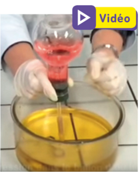
🎬 Voir la vidéo de l'expérience
Le gaz initialement présent dans le ballon (HCl + air) et le gaz restant en fin d'expérience (air seul, une fois le HCl dissous dans l'eau du cristallisoir) sont tous deux modélisés par le gaz parfait, à la même température T = 298 K.
Quantité de matière totale de gaz initialement présente dans le ballon :
Quantité de matière d'air restant dans le ballon en fin d'expérience (l'air ne se dissout pas dans l'eau, sa quantité de matière n'a donc pas changé au cours de l'expérience) :
La quantité de matière de chlorure d'hydrogène gazeux initialement introduite dans le ballon correspond alors à la quantité de gaz qui a disparu du ballon, c'est-à-dire qui s'est dissoute dans l'eau :
Exercice 12 : Déterminer une variation d'énergie interne
De l'eau dans une baignoire de volume V = 200 L est chauffée de 15 °C à 37 °C.
Données :
• Masse volumique de l'eau : ρeau = 1,00×10³ kg·m⁻³.
• Capacité thermique massique de l'eau : ceau = 4180 J·K⁻¹·kg⁻¹.
a. La température de l'eau augmente de 15 °C à 37 °C. L'énergie cinétique microscopique moyenne des molécules d'eau étant une fonction croissante de la température, elle est donc plus grande à l'état final qu'à l'état initial : les molécules d'eau s'agitent davantage après le chauffage.
b. L'énergie interne U du système {eau} est la somme de l'énergie cinétique microscopique et de l'énergie potentielle d'interaction microscopique. Ici, l'eau reste liquide (pas de changement d'état), les interactions entre molécules ne sont donc pas globalement modifiées. Seule l'énergie cinétique microscopique augmente (question a.) : l'énergie interne du système {eau} augmente au cours du chauffage.
c. Masse d'eau chauffée :
Énergie nécessaire pour chauffer cette eau de ΔT = 37 − 15 = 22 °C = 22 K :
d. Durée de fonctionnement d'une ampoule de puissance P = 10 W pour consommer cette même énergie :
Cette durée, supérieure à trois semaines, montre que l'énergie nécessaire pour chauffer une baignoire d'eau est considérable : elle est très largement supérieure à celle que peut fournir, sur une durée raisonnable, un appareil de faible puissance comme une ampoule. Cela illustre l'ordre de grandeur important de l'énergie mise en jeu lors du chauffage d'une grande quantité d'eau, comparé à des usages électriques domestiques courants.
Exercice 13 : Calculer une capacité thermique
Une énergie E = 12 kJ est fournie à un morceau de cuivre de masse m = 475 g et de température initiale θi = 20 °C. À l'état final, sa température est θf = 90 °C.
Donnée : valeur de référence de la capacité thermique massique du cuivre : cref = 3,8×10² J·kg⁻¹·K⁻¹.
a. L'énergie fournie au cuivre vérifie E = m × c₁ × ΔT, avec ΔT = θf − θi = 90 − 20 = 70 °C = 70 K. On en déduit :
Cette valeur est proche de la valeur de référence cref = 3,8×10² J·kg⁻¹·K⁻¹, ce qui est cohérent pour une mesure réalisée à partir d'un seul essai.
b. Écart entre la valeur expérimentale moyenne et la valeur de référence :
On compare cet écart à deux fois l'incertitude type : 2×u(c̄exp) = 2×1×10¹ = 2×10¹ J·kg⁻¹·K⁻¹.
L'écart (1×10¹) est inférieur à 2×u(c̄exp) (2×10¹) : la valeur expérimentale moyenne c̄exp est donc compatible avec la valeur de référence cref, aux incertitudes de mesure près.
Exercice 14 : Évaluer une variation de température
Une canette auto-réfrigérante comporte à sa base un réservoir en acier contenant un liquide sous haute pression. Lors de l'activation du dispositif, le liquide est libéré dans un serpentin en aluminium et se vaporise en « absorbant » dans la boisson à refroidir une énergie E = 12 kJ.
Données :
• Volume de la boisson : V = 33 cL.
• Capacité thermique massique de la boisson : c = 4,2 kJ·K⁻¹·kg⁻¹.
• Masse volumique de la boisson : ρ = 1,0 kg·L⁻¹.
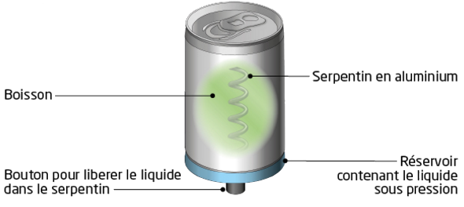
a. Le liquide libéré dans le serpentin se vaporise en prélevant l'énergie E = 12 kJ sur la boisson : la boisson cède de l'énergie au liquide qui se vaporise, donc son énergie interne U diminue. À l'échelle microscopique, cela se traduit par une diminution de l'agitation des entités de la boisson (baisse de leur énergie cinétique microscopique moyenne), ce qui correspond à une diminution de sa température.
b. Masse de boisson :
L'énergie cédée par la boisson vérifie E = m × c × |ΔT|, d'où :
Puisque la boisson se refroidit (question a.), on a ΔT ≈ −8,7 °C.
Ce résultat est cohérent avec le principe d'une canette auto-réfrigérante : une baisse d'environ 9 °C est notable et permet de rafraîchir sensiblement la boisson (par exemple de 20 °C à environ 11 °C), sans pour autant la congeler — ce qui correspond bien à l'usage attendu d'un tel dispositif.
Exercice 17 : Analyser un mode de transfert thermique
Parmi les exemples suivants, déterminer le(s) mode(s) de transfert(s) thermique(s) ayant lieu.
a. Le radiateur électrique met en jeu deux modes de transfert thermique : la convection (l'air chauffé au contact du radiateur devient moins dense et s'élève, ce qui met en mouvement l'air de la pièce et répartit la chaleur) et le rayonnement (la surface chaude du radiateur émet directement un rayonnement infrarouge, absorbé par les objets et les personnes présentes dans la pièce, sans nécessiter de contact ni de déplacement d'air).
b. Le thé brûlant et la paroi de la tasse (plus froide) sont en contact direct : le transfert thermique s'effectue par conduction, de proche en proche à travers le matériau solide de la tasse, sans déplacement macroscopique de matière à cette interface.
c. Les braises incandescentes, à très haute température, émettent un rayonnement (infrarouge et visible) qui participe directement à la cuisson de la viande à distance. L'air chauffé au contact des braises s'élève également, créant un courant de convection qui enveloppe la viande de chaleur.
d. L'air ambiant de la pièce, plus chaud que les glaçons, se refroidit à leur contact : il devient alors plus dense et descend, tandis que de l'air plus chaud vient le remplacer. Il s'agit donc d'un transfert thermique par convection.
Ces exemples montrent qu'une même situation peut mettre en jeu plusieurs modes de transfert thermique simultanément, la part de chacun dépendant des matériaux en présence, de l'existence ou non d'un fluide en mouvement, et de la température des sources en jeu.
Exercice 20 : Calculer des flux thermiques
Une fenêtre d'aire S = 1 m², de résistance thermique Rth = 3,3×10⁻³ K·W⁻¹ est installée dans le mur d'une maison. La température intérieure est θi = 20 °C. La température extérieure, un jour d'hiver, vaut θe = 5 °C.
Flux thermique à travers la fenêtre :
Énergie perdue à travers la fenêtre pendant une journée (Δt = 24 h = 86 400 s) :
Cette énergie perdue, considérable pour une seule fenêtre et une seule journée, illustre l'importance d'une bonne isolation thermique (par exemple à l'aide d'un double vitrage, cf. exercice précédent) pour limiter les déperditions énergétiques d'une habitation.
Exercice 21 : Étudier l'effet de serre et l'albédo
La température moyenne TT de la surface terrestre peut s'exprimer sous la forme TT = [ (2×(1−A)) / ((2−α)×k) × φS ]1/4, avec :
- A l'albédo du système {Terre ; atmosphère} ;
- α la proportion du flux thermique surfacique rayonné par la Terre et absorbé par l'atmosphère ;
- k une constante.
a. α représente la proportion du rayonnement infrarouge émis par la Terre qui est absorbée par l'atmosphère, notamment par les gaz à effet de serre (eau, dioxyde de carbone, méthane, ozone...). Plus les concentrations de ces gaz à effet de serre dans l'atmosphère sont grandes, plus l'atmosphère absorbe une part importante du rayonnement terrestre, donc plus la valeur de α est grande. α est donc une fonction croissante des concentrations en gaz à effet de serre.
b. Dans l'expression TT = [2(1−A)/((2−α)k) × φS]1/4 :
- Le facteur (1−A) est au numérateur : si l'albédo A augmente, (1−A) diminue, donc TT diminue. L'albédo a donc un effet refroidissant : plus la Terre réfléchit le rayonnement solaire, moins elle en absorbe, et plus sa température moyenne est basse.
- Le facteur (2−α) est au dénominateur : si α augmente (renforcement de l'effet de serre), (2−α) diminue, donc la fraction globale augmente, et TT augmente. L'effet de serre a donc un effet réchauffant : plus l'atmosphère absorbe et renvoie de rayonnement infrarouge vers le sol, plus la température moyenne de surface est élevée.
Ces deux effets sont donc opposés : l'albédo refroidit la surface terrestre tandis que l'effet de serre la réchauffe. C'est leur combinaison qui permet d'obtenir une température moyenne de surface proche de la réalité (environ 15 °C) — et toute augmentation des concentrations en gaz à effet de serre (donc de α), sans variation compensatoire de l'albédo, se traduit par une hausse de la température moyenne de la Terre, c'est-à-dire un réchauffement climatique.
Exercice 29 : Refroidissement d'une génératrice
Une génératrice permet de convertir de l'énergie mécanique en énergie électrique. On assure son refroidissement par l'intermédiaire de la circulation d'une quantité de matière n de fluide que l'on assimile ici au gaz parfait. Celui-ci décrit un cycle entre les états d'équilibres du gaz C → D → A → B représentés dans le diagramme P = f(V) ci-contre.
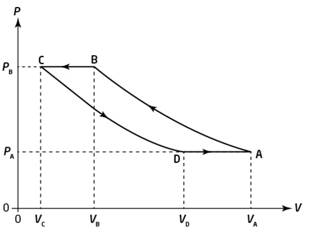
Les segments D→A et B→C sont horizontaux : ce sont des transformations isobares (à pression constante, PA et PB respectivement). D'après l'équation d'état du gaz parfait PV = nRT, à pression et quantité de matière constantes, la température T est proportionnelle au volume V.
Sur l'isobare D→A (à PA) : comme VD < VA (lecture du graphique), on a TD < TA.
Sur l'isobare B→C (à PB) : comme VC < VB, on a TC < TB.
Les courbes A→B et C→D ont la forme caractéristique d'une hyperbole (P inversement proportionnel à V) : ce sont des transformations isothermes, pour lesquelles le produit PV = nRT reste constant. On a donc TA = TB (isotherme A→B) et TC = TD (isotherme C→D).
En combinant ces résultats (TD < TA, TA = TB, TC = TD), on obtient le classement dans l'ordre croissant :
Le cycle décrit donc bien un refroidissement : le gaz passe par une phase à haute température (états A et B) puis par une phase à basse température (états C et D), ce qui permet d'évacuer de la chaleur de la génératrice au cours du cycle.
Exercice 31 : Au-delà du modèle du gaz parfait
Le physicien français Émile Amagat (1841-1915) a étudié le comportement des gaz selon leur pression en menant des études expérimentales sur les relations entre les grandeurs macroscopiques décrivant les gaz à l'équilibre. L'évolution isotherme (à température T constante) de ces grandeurs macroscopiques conduit à la représentation du diagramme ci-contre pour différents gaz.
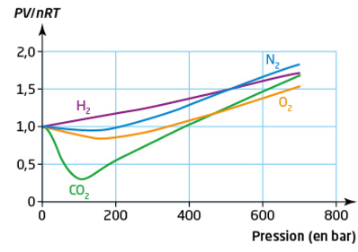
a. Pour un gaz parfait, l'équation d'état PV = nRT impose PV/(nRT) = 1 à toute pression. Or, sur le graphe, les quatre gaz (H₂, N₂, O₂, CO₂) présentent tous une valeur de PV/(nRT) qui tend vers 1 lorsque la pression tend vers 0 (aux faibles pressions, à gauche du graphe). Cela confirme bien que le modèle du gaz parfait décrit correctement le comportement de tous les gaz réels aux pressions faibles, quelle que soit leur nature.
b. Un gaz parfait vérifie PV = nRT à toute pression, donc PV/(nRT) = 1 pour toute valeur de la pression. La courbe correspondant au gaz parfait est donc une droite horizontale, d'ordonnée 1, sur toute la plage de pression représentée.
c. Aux pressions supérieures à 10 bar, les entités du gaz sont suffisamment rapprochées pour que deux effets, négligés par le modèle du gaz parfait, deviennent sensibles :
- des interactions attractives entre entités, qui tendent à rapprocher les entités les unes des autres et donc à diminuer la pression réelle par rapport à la valeur prévue par le modèle du gaz parfait (PV/(nRT) < 1) ;
- le volume propre non négligeable des entités, qui réduit le volume réellement disponible pour leur déplacement et tend au contraire à augmenter la pression réelle par rapport à la prévision du gaz parfait (PV/(nRT) > 1).
Pour le CO₂, molécule facilement polarisable, les interactions attractives entre molécules dominent nettement aux pressions modérées (100 à 300 bar), ce qui explique la chute prononcée de PV/(nRT) en dessous de 1. Aux pressions plus élevées, les molécules sont si rapprochées que l'effet de volume propre finit par l'emporter, ce qui explique la remontée de la courbe au-delà de 1.
Pour le H₂, molécule très petite et peu polarisable, les interactions attractives sont très faibles : c'est l'effet de volume propre qui domine dès les pressions modérées, ce qui explique que PV/(nRT) soit supérieur à 1 dès le début de l'écart au modèle du gaz parfait, et augmente ensuite régulièrement avec la pression.
Exercice 32 : Stockage des aérosols
Une bombe aérosol neuve, de volume V = 200 mL, contient comme propulseur du diazote, que l'on assimile au gaz parfait.
a. Volume du gaz propulseur : V₁ = 40 % × V = 0,40 × 200×10⁻⁶ = 8,0×10⁻⁵ m³. Avec T₁ = 25,0 + 273,15 ≈ 298 K et P₁ = 6,00×10⁵ Pa :
b. À volume V et quantité de matière n constants, l'équation d'état du gaz parfait donne P/T = nR/V = constante, soit P₁/T₁ = P₂/T₂, d'où :
c. Une température de 224 °C est totalement irréaliste dans la vie courante, même dans les conditions les plus extrêmes (une voiture en plein soleil peut atteindre 60 à 70 °C, un radiateur ou une flamme peuvent dépasser cette valeur, mais ce ne sont pas des situations de stockage normal). Cette situation ne peut donc pas se produire dans la vie courante — sauf exposition volontaire et dangereuse à une source de chaleur intense (d'où les avertissements « ne pas exposer à une source de chaleur » figurant sur les aérosols).
d. Quantité de matière de gaz propulseur restant lorsque P₃ = 3×10⁵ Pa et V₃ = 160×10⁻⁶ m³, à T₁ = 298 K :
On trouve n₃ ≈ n₁ : la quantité de matière de gaz propulseur n'a pas diminué (le diazote propulseur n'est pas consommé, seul le produit qu'il propulse — le déodorant — l'est). Le gaz occupe simplement un volume de plus en plus grand à mesure que le produit liquide est expulsé, ce qui fait chuter sa pression.
L'inconvénient de ce type de conditionnement est donc le suivant : lorsque la pression du gaz propulseur devient trop faible (ici P₃ = 3 bar), celui-ci ne parvient plus à expulser efficacement le produit restant, même s'il reste encore du déodorant (ou autre produit) dans la bombe. Une partie du produit acheté est donc gaspillée, car elle devient inutilisable une fois la pression du gaz propulseur devenue insuffisante.
Exercice 34 : Ludion
Un ludion est un petit corps solide placé dans une bouteille remplie de liquide incompressible (comme l'eau), qui a pour particularité de changer de flottabilité lorsque la pression du liquide est modifiée. Pour cela, le ludion renferme un volume d'air en contact avec le liquide ambiant.
On peut faire varier la pression du liquide dans la bouteille de plusieurs façons :
- en utilisant une bouteille rigide (bouteille en verre par exemple) avec un bouchon sur lequel on peut appliquer une force pressante extérieure ;
- en utilisant une bouteille souple en plastique que l'on comprime ;
- en adaptant une pompe à air hermétiquement fixée sur le bouchon de la bouteille ;
- en utilisant une bouteille rigide (bouteille en verre par exemple) hermétiquement fermée que l'on peut chauffer.
a. (Schéma attendu pour chaque dispositif : une bouteille remplie de liquide contenant le ludion, avec, selon le cas — une flèche représentant une main appuyant sur le bouchon de la bouteille rigide ; deux flèches représentant une main comprimant latéralement les parois de la bouteille souple ; une pompe à air reliée hermétiquement au bouchon, avec une flèche indiquant l'injection d'air supplémentaire ; ou une flamme/résistance chauffante placée sous la bouteille rigide fermée, avec une flèche ondulée symbolisant l'apport de chaleur.)
b. Dans les trois premiers dispositifs (bouchon sur bouteille rigide, bouteille souple comprimée, pompe à air), on agit mécaniquement sur le système à température constante : la pression P de l'air contenu dans la bouteille augmente (force pressante accrue, ou ajout de matière avec la pompe), et son volume V diminue en conséquence (transformation isotherme). Dans le cas de la pompe, la quantité de matière n de gaz dans la bouteille augmente également, puisque de l'air y est injecté.
Dans le quatrième dispositif (bouteille rigide fermée chauffée), le volume total V de la bouteille (rigide) et la quantité de matière n d'air restent constants : c'est la température T qui augmente, ce qui entraîne une augmentation de la pression P (transformation isochore).
c. D'après la loi de Pascal, la pression exercée sur le liquide incompressible se transmet intégralement à l'air enfermé dans le ludion. Cette pression augmentant (question b.), et la température étant globalement constante lors d'une compression mécanique, la loi de Boyle-Mariotte (PV = constante à T fixée) impose que le volume d'air contenu dans le ludion diminue lorsque la pression augmente.
d. La masse du ludion (solide + air emprisonné) reste inchangée, mais son volume total diminue (question c.) : sa masse volumique moyenne ρludion = m/V augmente donc. Lorsque cette masse volumique moyenne devient supérieure à celle du liquide environnant, la poussée d'Archimède (proportionnelle au volume de liquide déplacé, donc au volume du ludion, qui a diminué) devient inférieure au poids du ludion. La résultante des forces est alors dirigée vers le bas : le ludion coule, ce qui explique son mouvement vertical descendant.
Exercice 22 : Apprendre à rédiger
La neige artificielle est obtenue en pulvérisant de fines gouttes d'eau liquide à θi = 10 °C dans l'air ambiant à θa = −15 °C. À la sortie du canon à neige, une goutte d'eau de masse m = 33 µg et de surface S = 5,0×10⁻⁷ m² commence à refroidir en restant liquide. Elle reçoit de la part de l'air extérieur un flux thermique modélisé par Φ = h × S × (Ta − T(t)), où T(t) est la température de la goutte à la date t et h une constante.
Données :
• h = 65 W·m⁻²·K⁻¹.
• Capacité thermique massique de l'eau ceau = 4,18×10³ J·K⁻¹·kg⁻¹.
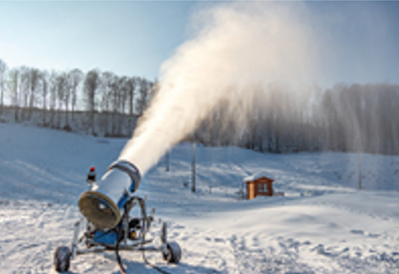
a. (Schéma attendu : la goutte {système}, représentée par un petit disque ou une goutte, entourée d'une flèche représentant le transfert thermique Φ, orientée de l'air extérieur vers la goutte si T(t) > Ta — la goutte cède en réalité de l'énergie à l'air plus froid, donc Φ < 0 avec la convention adoptée dans l'énoncé, ce qui correspond bien à un refroidissement de la goutte.)
b. Le système {goutte} reste liquide (pas de changement d'état) et immobile (pas de travail mécanique ni d'énergie cinétique macroscopique) : le premier principe de la thermodynamique, appliqué sous forme élémentaire, s'écrit donc simplement :
c. La goutte étant liquide, sa variation élémentaire d'énergie interne s'écrit dU = m × ceau × dT. En combinant avec la relation de la question b. et l'expression de Φ donnée dans l'énoncé :
soit, en divisant par m × ceau × dt :
d. En posant τ = (m×ceau)/(h×S), l'équation différentielle se réécrit :
La solution générale de cette équation différentielle linéaire du premier ordre à coefficients constants est la somme de la solution particulière constante Ta (régime permanent) et de la solution générale de l'équation homogène associée, en A×e−t/τ :
La condition initiale T(0) = Ti donne A = Ti − Ta, d'où finalement :
e. Valeur numérique de τ :
En isolant t dans l'expression de T(t), avec Ti = 283 K, Ta = 258 K et T(t) = 273 K :
La goutte d'eau atteint donc 0 °C environ 2,2 secondes après sa pulvérisation, ce qui est cohérent avec la formation quasi instantanée de neige artificielle observée à la sortie d'un canon à neige.
Exercice 27 : Résistance thermique d'une paroi
La paroi d'un bâtiment est le siège d'un flux thermique de 600 W.
La température intérieure du bâtiment vaut 20 °C, alors que la température extérieure est de −5 °C.
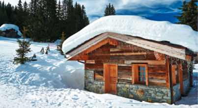
a. (Schéma attendu : une paroi verticale séparant une zone « intérieur » à 20 °C (à gauche par exemple) d'une zone « extérieur » à −5 °C (à droite), avec une flèche traversant la paroi de la gauche vers la droite, représentant le flux thermique Φ = 600 W, orienté de la zone la plus chaude vers la zone la plus froide.)
b. D'après la relation entre flux thermique et résistance thermique, Φ = ΔT/Rth, avec ΔT = 20 − (−5) = 25 °C = 25 K :
Exercice 29 : Bilan d'énergie dans un sauna
Un homme se trouve dans la cabine d'un sauna. Un radiateur électrique est utilisé pour compenser les pertes thermiques Qe avec l'extérieur (air extérieur, homme, etc.) et maintenir ainsi constante la température de la cabine.
Données — Transferts d'énergie pendant la durée d'utilisation du sauna :
• travail électrique reçu par le radiateur Wr = 12×10⁶ J ;
• transfert thermique entre la cabine et l'extérieur |Qe| = 13×10⁶ J.
a. (Schéma attendu : le système {cabine}, représenté par un rectangle ou un cercle, avec une flèche entrante Wr représentant le travail électrique reçu du radiateur, et une flèche sortante Qe représentant le transfert thermique cédé vers l'extérieur.) Le système {cabine} reçoit le travail électrique du radiateur : Wr = +12×10⁶ J (positif). Il cède de l'énergie thermique vers l'extérieur (pertes) : Qe = −13×10⁶ J (négatif, puisque le transfert thermique est compté du point de vue du système qui le reçoit, ici en le perdant).
b. Le premier principe de la thermodynamique appliqué au système {cabine} s'écrit :
c. Application numérique :
La variation d'énergie interne du système {cabine} est négative : le radiateur ne parvient donc pas à compenser entièrement les pertes thermiques. En effet, si le radiateur compensait exactement les pertes, on aurait ΔU = 0 (température de la cabine constante). Ici, l'énergie électrique reçue (12×10⁶ J) est inférieure en valeur absolue à l'énergie perdue vers l'extérieur (13×10⁶ J) : il manque 1×10⁶ J pour maintenir la cabine à température constante, ce qui se traduirait par un léger refroidissement de la cabine sur la durée considérée.
Exercice 32 : Glaçons en été
Une fois sortis du congélateur, les glaçons peuvent se conserver plus longtemps en été s'ils sont placés dans un torchon épais.
Un torchon épais joue le rôle d'une paroi isolante entre les glaçons (froids) et l'air ambiant (chaud) en été. D'après la relation Rth = e/(λth×S), la résistance thermique Rth d'une paroi est proportionnelle à son épaisseur e : plus le torchon est épais, plus sa résistance thermique est grande.
Or le flux thermique Φ reçu par les glaçons de la part de l'air ambiant s'écrit Φ = ΔT/Rth, avec ΔT l'écart entre la température de l'air et celle des glaçons. Pour un même écart de température ΔT, une résistance thermique Rth plus grande entraîne donc un flux thermique Φ plus faible : les glaçons reçoivent alors moins d'énergie thermique par unité de temps.
Comme la fusion des glaçons nécessite une quantité d'énergie thermique fixée (énergie de fusion), un flux thermique plus faible signifie qu'il faut davantage de temps pour apporter cette énergie aux glaçons : ceux-ci fondent donc plus lentement et se conservent plus longtemps lorsqu'ils sont enveloppés dans un torchon épais.
Exercice 34 : Fonctionnement d'une bouilloire
Un échantillon d'eau de masse m = 700 g, de température θi = 20 °C, est porté à ébullition dans une bouilloire en une durée Δt = 3 min. Le schéma des transferts est donné ci-contre, pour le système {eau}.
Données :
• Capacité thermique massique : ceau = 4,18 kJ·K⁻¹·kg⁻¹.
• Puissance électrique de la résistance chauffante : P = 1,5 kW.
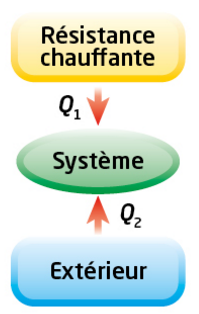
a. Avec Δt = 3 min = 180 s :
b. L'eau étant portée à ébullition, sa température finale est θf = 100 °C, soit ΔT = 100 − 20 = 80 °C = 80 K :
c. D'après le premier principe de la thermodynamique appliqué au système {eau} : ΔU = Q₁ + Q₂, d'où :
Le signe négatif de Q₂ indique que le système {eau} cède de l'énergie thermique vers l'extérieur (et non l'inverse) : une partie de l'énergie électrique fournie par la résistance chauffante ne sert donc pas à chauffer l'eau, mais est perdue vers l'extérieur (parois de la bouilloire, air ambiant...). Ce résultat est cohérent avec le fait qu'une bouilloire réelle n'est jamais parfaitement isolée thermiquement.
Exercice 36 : Confort thermique d'un igloo
Pour passer la nuit au chaud, les Inuits ont l'habitude de construire des igloos constitués de neige compactée.
La température intérieure d'un igloo est en moyenne θint = 20 °C, la température extérieure θext = −40 °C. Pendant la nuit, un Inuit dégage « 0,5 MJ de chaleur par heure ».
Données :
• Conductivité thermique de la neige compactée : λth = 0,25 W·m⁻¹·K⁻¹.
• Rayon intérieur de l'igloo : R₀ = 1,0 m.
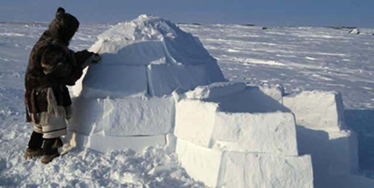
a. « 0,5 MJ de chaleur par heure » désigne une énergie dégagée par unité de temps, c'est-à-dire une puissance. Son unité conventionnelle (SI) est le watt (W), avec 1 W = 1 J·s⁻¹ :
b. Pour trois Inuits, la puissance totale dégagée est :
Pour que l'igloo ne se refroidisse pas, cette puissance doit compenser exactement le flux thermique perdu à travers les parois : Ptot = Φ = ΔT/Rth, avec ΔT = θint − θext = 20 − (−40) = 60 °C = 60 K :
c. En isolant 1/(R₀+e) dans la relation donnée :
d. Une épaisseur de mur d'environ 29 cm est tout à fait cohérente avec ce que l'on observe sur la photo : les blocs de neige compactée empilés par l'Inuit apparaissent effectivement épais (de l'ordre de la trentaine de centimètres), bien plus qu'une simple paroi fine. Ce résultat confirme que l'épaisseur importante des murs d'un igloo n'est pas seulement une contrainte de construction : elle est également nécessaire, compte tenu de la conductivité thermique de la neige compactée, pour offrir une résistance thermique suffisante et ainsi maintenir une température intérieure confortable malgré le froid extérieur.
Exercice 37 : Suivi cinétique d'une transformation chimique
Les pluies acides sont des précipitations qui peuvent contenir de l'acide sulfurique résultant de la combustion des combustibles fossiles. Cet acide est susceptible de réagir avec le zinc présent dans les gouttières. Pour étudier la transformation chimique entre l'acide sulfurique et le zinc, considérée comme totale, on réalise l'expérience décrite dans le Doc. 1. L'étude a comme objectif de retrouver expérimentalement la valeur de l'avancement maximal xmax de la réaction attendue théoriquement.
📄 Documents
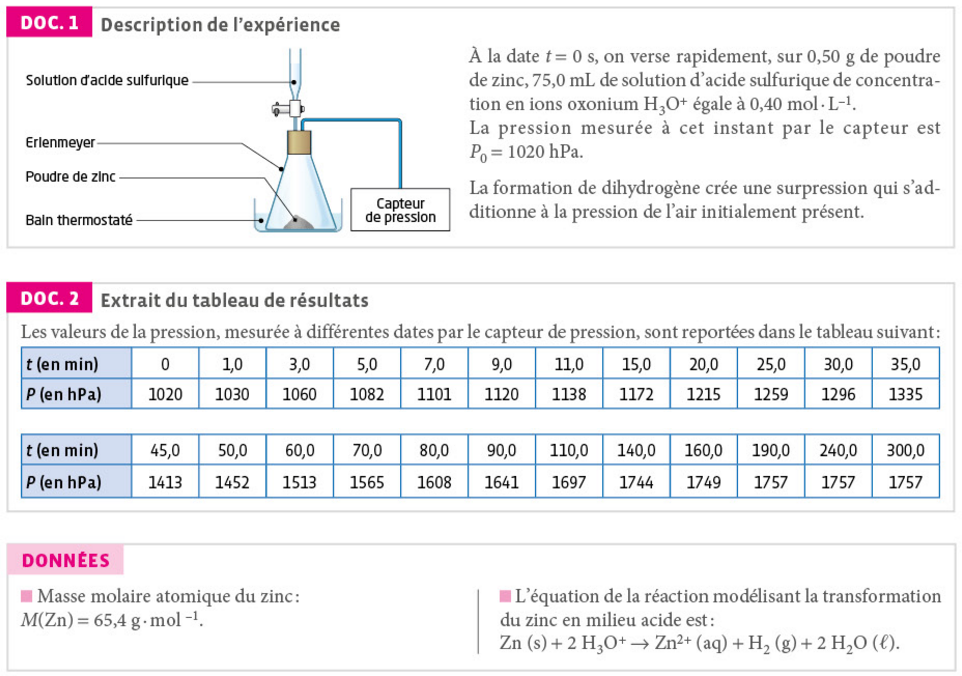
1. Quantités de matière initiales :
Tableau d'avancement (Zn + 2H₃O⁺ → Zn²⁺ + H₂ + 2H₂O) :
| État | Avancement | n(Zn) | n(H₃O⁺) | n(Zn²⁺) | n(H₂) |
|---|---|---|---|---|---|
| Initial | 0 | 7,65×10⁻³ | 3,0×10⁻² | 0 | 0 |
| En cours | x | 7,65×10⁻³ − x | 3,0×10⁻² − 2x | x | x |
| Final | xmax | 7,65×10⁻³ − xmax | 3,0×10⁻² − 2xmax | xmax | xmax |
Avancement maximal si le zinc est épuisé : xmax,Zn = 7,65×10⁻³ mol. Avancement maximal si les ions oxonium sont épuisés : xmax,H₃O⁺ = (3,0×10⁻²)/2 = 1,5×10⁻² mol. Le réactif limitant est celui qui donne le plus petit avancement, soit le zinc :
2. Le dihydrogène produit et l'air initialement présent occupent tous deux le même volume V (constant, celui de l'erlenmeyer non rempli par la solution), à la même température T (bain thermostaté). D'après l'équation d'état du gaz parfait, à un instant t :
À t = 0, x(0) = 0, donc P₀×V = nair×R×T. En soustrayant cette relation à la précédente :
De même, à l'état final (x = xmax, réaction totale) : (Pmax − P₀)×V = xmax×R×T. En faisant le rapport des deux relations (V, R, T s'éliminent) :
3. Avec P₀ = 1020 hPa et Pmax = 1757 hPa (valeur du palier atteint à partir de t = 190 min dans le Doc. 2), on obtient, à l'aide de la relation établie en 2. (xmax = 7,65×10⁻³ mol), le tableau de valeurs suivant (x en 10⁻³ mol) :
| t (min) | 0 | 1 | 3 | 5 | 7 | 9 | 11 | 15 | 20 | 25 | 30 | 35 |
|---|---|---|---|---|---|---|---|---|---|---|---|---|
| x (10⁻³ mol) | 0 | 0,10 | 0,42 | 0,64 | 0,84 | 1,04 | 1,22 | 1,58 | 2,02 | 2,48 | 2,86 | 3,27 |
| t (min) | 45 | 50 | 60 | 70 | 80 | 90 | 110 | 140 | 160 | 190 | 240 | 300 |
|---|---|---|---|---|---|---|---|---|---|---|---|---|
| x (10⁻³ mol) | 4,08 | 4,48 | 5,11 | 5,65 | 6,10 | 6,44 | 7,02 | 7,51 | 7,56 | 7,65 | 7,65 | 7,65 |
La courbe x(t) obtenue en plaçant ces points est croissante, avec une pente forte au début (réaction rapide) qui diminue progressivement (la réaction ralentit à mesure que les réactifs sont consommés), jusqu'à atteindre un palier horizontal à partir de t ≈ 190 min, signe que la réaction est terminée.
4. Le palier de la courbe tracée en 3. est atteint pour xf ≈ 7,65×10⁻³ mol (à partir de t = 190 min, où la pression n'évolue plus). Cette valeur est en excellent accord avec l'avancement maximal théorique xmax = 7,65×10⁻³ mol déterminé à la question 1. L'expérience confirme donc que la transformation est totale, le zinc étant intégralement consommé. Les éventuels petits écarts entre xf et xmax proviendraient uniquement de la précision de lecture graphique sur papier millimétré ou des incertitudes de mesure sur les pressions relevées par le capteur, et non d'un écart réel entre théorie et expérience.
Exercice 38 : Des bouchons sous pression (résolution de problème)
Le champagne doit son effervescence au dioxyde de carbone dissous (CO₂) qui est libéré sous forme de gaz à l'ouverture du bouchon. Il en contient entre 5 et 9 g dans une bouteille.
📄 Documents
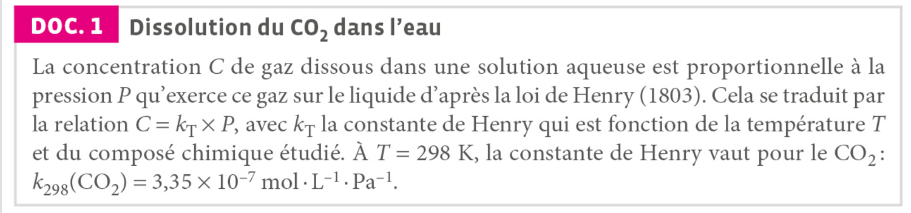
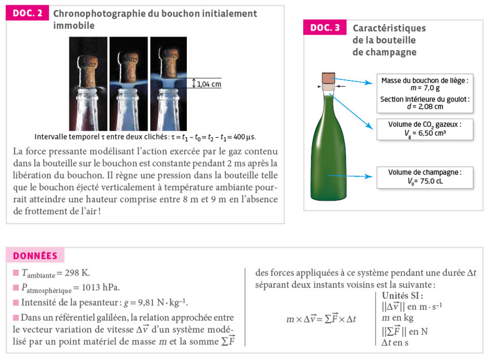
- Utilise le Doc 2 pour déterminer, par la chronophotographie, une valeur de la vitesse v₀ du bouchon (distance parcourue entre deux clichés ÷ durée τ entre ces clichés).
- En modélisant le bouchon initialement immobile, applique la relation de la 2de loi de Newton donnée dans les Données, sur la durée Δt = 2 ms pendant laquelle la force pressante du gaz est constante, pour en déduire la force exercée par le gaz sur le bouchon (n'oublie pas les forces dues à la pression atmosphérique et au poids, qui s'exercent aussi pendant cette durée).
- Convertis cette force en pression P du gaz dans la bouteille, à l'aide de la section du goulot (Doc 3).
- Utilise l'équation d'état du gaz parfait pour calculer la quantité de matière de CO₂ gazeux présente dans le volume Vg (Doc 3), à cette pression P et à la température ambiante.
- Utilise la loi de Henry (Doc 1) avec cette même pression P pour calculer la concentration, puis la quantité de matière de CO₂ dissous dans le volume de champagne V₀ (Doc 3).
- Additionne les deux quantités de matière, puis compare le résultat obtenu (en le convertissant en masse) à la fourchette de 5 à 9 g annoncée dans l'énoncé, en identifiant les hypothèses les plus discutables.
Étape 1 — Vitesse du bouchon à sa sortie (Doc 2). La chronophotographie montre un déplacement de 1,04 cm du bouchon entre deux clichés séparés de τ = 400 µs. En assimilant ce rapport à la vitesse v₀ du bouchon à cet instant :
Étape 2 — Force exercée par le gaz (2de loi de Newton). Le bouchon, initialement immobile, subit pendant Δt = 2 ms trois forces verticales : la force pressante du gaz Fgaz = P×S (vers le haut), la force due à la pression atmosphérique Fatm = Patm×S (vers le bas) et son poids m×g (vers le bas), où S est la section intérieure du goulot :
En appliquant m×Δv = ΣF×Δt, avec Δv = v₀ − 0 = 26 m·s⁻¹ :
(Le poids du bouchon, environ 0,07 N, est bien négligeable devant les deux autres contributions.)
Étape 3 — Pression du gaz dans la bouteille.
Étape 4 — Quantité de matière de CO₂ gazeux (gaz parfait, volume Vg = 6,50 cm³, T = 298 K) :
Étape 5 — Quantité de matière de CO₂ dissous (loi de Henry, V₀ = 75,0 cL = 0,750 L) :
Étape 6 — Quantité de matière totale et masse de CO₂ :
Regard critique. La valeur estimée (environ 4,1 g) est du même ordre de grandeur que la fourchette annoncée dans l'énoncé (5 à 9 g), ce qui valide globalement la démarche de modélisation (loi de Henry, gaz parfait, 2de loi de Newton), mais la sous-estime néanmoins.
Une incohérence interne au modèle mérite d'ailleurs d'être relevée : le Doc 2 indique qu'avec la pression régnant dans la bouteille, le bouchon éjecté sans frottement de l'air atteindrait une hauteur comprise entre 8 et 9 m, ce qui correspondrait, par conservation de l'énergie mécanique (v₀ = √(2gh)), à une vitesse de sortie comprise entre environ 12,5 et 13,3 m·s⁻¹ — soit une valeur bien inférieure à celle mesurée par chronophotographie (26 m·s⁻¹). Si cette dernière valeur était réellement la vitesse de sortie du bouchon, celui-ci devrait, en l'absence de frottement, s'élever à environ 34 m, bien au-delà des 8-9 m annoncés.
Cet écart révèle les limites des hypothèses formulées : la vitesse mesurée par chronophotographie n'est qu'une vitesse moyenne sur un intervalle très court, pas nécessairement égale à la vitesse finale de sortie ; la force pressante n'est sans doute pas rigoureusement constante pendant toute la durée Δt = 2 ms ; et le gaz du col de la bouteille n'est probablement pas constitué uniquement de CO₂ pur, comme supposé implicitement en appliquant la loi de Henry avec la pression totale P. Malgré ces approximations, l'ordre de grandeur obtenu (quelques grammes de CO₂) reste cohérent avec la réalité, ce qui montre la pertinence de la démarche de modélisation malgré ses simplifications.
Exercice 35 : Valeur en eau d'un calorimètre
Un calorimètre est un récipient parfaitement isolé qui permet d'éviter les transferts thermiques avec l'extérieur. Un calorimètre contient un échantillon d'eau de masse m₁ = 95 g à la température θ₁ = 20 °C. Un échantillon d'eau de masse m₂ = 71 g à la température θ₂ = 50 °C est alors ajouté. Lorsque l'équilibre thermique est atteint, la température finale θf est relevée.
La « valeur en eau » d'un corps est la masse d'eau fictive μ qui a la même capacité thermique que le corps.
Donnée : capacité thermique massique ceau = 4,18×10³ J·K⁻¹·kg⁻¹.
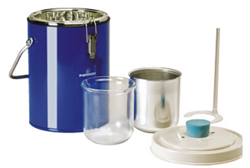
a. En négligeant le calorimètre :
Le système {eau froide ; eau chaude} étant isolé (calorimètre parfaitement isolé, aucun transfert thermique avec l'extérieur, aucun travail), le premier principe de la thermodynamique donne :
b. En développant la relation précédente :
En simplifiant par ceau et en isolant θf :
c. La température mesurée (31,3 °C) est inférieure à la température théorique calculée en négligeant le calorimètre (32,8 °C), d'environ 1,5 °C. Cet écart montre que le calorimètre n'est pas parfaitement isolé, ou plus précisément que le récipient lui-même (vase intérieur, couvercle, agitateur) absorbe une partie de l'énergie thermique cédée par l'eau chaude, ce qui abaisse la température finale par rapport à la prévision qui ne considérait que les deux échantillons d'eau.
d. En modélisant le calorimètre par sa valeur en eau μ (capacité thermique Ccalo = μ×ceau), initialement à θ₁, le système {eau froide ; eau chaude ; calorimètre} étant isolé :
En simplifiant par ceau et en isolant μ, avec cette fois θf = 31,3 °C (valeur mesurée) :
Capacité thermique du calorimètre :
Cette valeur en eau (environ 22,5 g, soit un peu moins du quart de la masse d'eau froide initiale) traduit le fait que le calorimètre se comporte, du point de vue thermique, comme s'il s'agissait d'environ 22,5 g d'eau supplémentaires à chauffer — ce qui explique pourquoi la température finale réellement mesurée est plus basse que celle prévue en ne tenant compte que des deux échantillons d'eau.
Exercice 37 : Huile de baleine (histoire des sciences)
📄 Document
« Lorsqu'on mêle ensemble deux quantités égales en poids d'eau et d'huile de blanc de baleine à des températures différentes, l'eau à 100° centigrades, par exemple, et l'huile de baleine à 50° centigrades, on doit naturellement s'attendre à trouver que la température de ce mélange, après l'avoir agité, sera celle moyenne de 75° centigrades […]. Mais expérimentalement, elle sera de 83° centigrades ; l'eau n'a par conséquent perdu que 17° centigrades de calorique, tandis que l'huile en a gagné 33. [...] L'augmentation par le calorique, de la température de l'eau étant de 1°, celle d'un poids égal d'huile de baleine sera de 2°. »
D'après R. Locqueneux, Préhistoire et histoire de la thermodynamique classique, Société française d'histoire des sciences et des techniques (1996)
Donnée : capacité thermique massique ceau = 4,18 kJ·K⁻¹·kg⁻¹.
a. Reformulation possible : « Lorsqu'on mélange des masses égales d'eau et d'huile de blanc de baleine à des températures différentes, l'eau à 100 °C et l'huile de baleine à 50 °C, on pourrait s'attendre à ce que la température de ce mélange, après agitation, soit la température moyenne de 75 °C […]. Mais expérimentalement, elle est de 83 °C : l'eau n'a donc cédé, par transfert thermique, qu'une variation de température de 17 °C, tandis que celle de l'huile a augmenté de 33 °C. [...] Pour un même transfert thermique reçu, l'augmentation de température de l'eau étant de 1 °C, celle d'une masse égale d'huile de baleine sera de 2 °C. »
b. Le système {eau ; huile}, de masses égales m, étant isolé (aucun transfert thermique avec l'extérieur), le premier principe de la thermodynamique donne :
En simplifiant par m, avec θf−θeau,i = −17 °C et θf−θhuile,i = +33 °C (valeurs données dans le texte) :
c. D'après la relation ΔU = m×c×ΔT, pour une même énergie thermique échangée |ΔU| et une même masse m, l'élévation de température ΔT est inversement proportionnelle à la capacité thermique massique c. Le rapport des capacités thermiques massiques vaut :
Cette valeur est très proche de 2, ce qui confirme, aux incertitudes de mesure et aux arrondis près (17° et 33°, plutôt que des valeurs donnant exactement un rapport de 2), l'affirmation de la phrase en italique : pour un même transfert thermique reçu et une masse égale, l'huile de baleine s'échauffe environ deux fois plus que l'eau, car sa capacité thermique massique est environ deux fois plus faible que celle de l'eau.
Exercice 38 : Rendement d'un moteur thermique idéal
Un moteur thermique ditherme est une machine thermique dans laquelle un fluide circule dans des tuyaux. Ce fluide effectue des transferts thermiques Qc et Qf avec deux sources appelées source chaude et source froide de températures respectives Tc et Tf. En pratique, la source froide est l'air ambiant et la source chaude est obtenue par combustion d'un carburant.
Le transfert thermique s'effectuant spontanément de la source chaude vers la source froide, le principe du moteur est d'utiliser ce transfert naturel afin d'entraîner une pièce mécanique et ainsi produire un travail mécanique. Le moteur fonctionne de façon cyclique. Un cycle se décompose en quatre transformations successives du fluide.
Les échanges thermiques entre le fluide et l'extérieur sont représentés sur le schéma ci-contre.
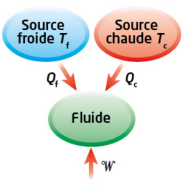
a. Le fluide reçoit réellement de l'énergie thermique de la part de la source chaude : Qc > 0. Il cède réellement de l'énergie thermique à la source froide : Qf < 0. Un moteur fournissant du travail à l'extérieur (pour entraîner une pièce mécanique), le fluide cède réellement du travail plutôt qu'il n'en reçoit : W < 0. Le fluide retrouvant son état initial à la fin de chaque cycle, l'énergie interne, fonction d'état, retrouve la même valeur : ΔU = 0 sur un cycle.
b. L'énergie utile fournie par le moteur à l'extérieur est l'opposée de W (puisque W, compté reçu par le fluide, est négatif) : énergie utile = −W > 0. L'énergie dépensée pour faire fonctionner le moteur est l'énergie thermique reçue de la source chaude : énergie dépensée = Qc > 0. Le rendement s'écrit donc :
Or W < 0 et Qc > 0, donc −W/Qc > 0 : la valeur absolue peut être omise, d'où η = −W/Qc.
c. Le premier principe de la thermodynamique appliqué au fluide sur un cycle complet (ΔU = 0, question a.) donne :
En substituant dans η = −W/Qc :
d. De la relation Qc/Tc + Qf/Tf = 0, on tire :
En reportant dans l'expression du rendement établie en c. :
Application numérique avec Tc = 3000 K et Tf = 300 K :
e. D'après l'expression η = 1 − Tf/Tc, à température de source froide Tf fixée (imposée par l'air ambiant), le rendement η est une fonction croissante de la température de la source chaude Tc : plus Tc est élevée, plus le rapport Tf/Tc est petit, et plus η se rapproche de 1. Obtenir une température de combustion la plus élevée possible permet donc de maximiser le rendement théorique du moteur thermique, c'est-à-dire de convertir une plus grande proportion de l'énergie thermique dépensée en travail utile, en limitant la part perdue sous forme de transfert thermique vers la source froide.
Exercice 40 : Capacité thermique 🐍 Python
Dans un calorimètre de capacité thermique C = 226 J·K⁻¹, sont ajoutés un échantillon d'eau de masse m = 100 g, un échantillon de fer de masse mf = 140 g et une résistance chauffante de capacité thermique négligeable. À l'équilibre thermique, l'ensemble est à la température θ₀ = 20 °C.
Pendant une durée Δt = 30 s, la résistance chauffante est alimentée par un courant électrique qui lui fournit une puissance électrique P = 350 W. La mesure de la température finale de l'ensemble donne θf = 34,8 °C.
La répétition de cette expérience permet d'obtenir une série de mesures indépendantes permettant de mesurer la valeur de la capacité thermique massique du fer cfer (voir les fichiers fournis). La représentation de l'histogramme, la valeur moyenne et de l'incertitude-type associée à cette série de mesures peuvent être réalisés à l'aide d'un tableur-grapheur ou du programme Python.
📊 Télécharger le tableur (.xlsx) 🐍 Télécharger le code Python (.py)
a. Le système {eau ; fer ; calorimètre} est isolé de l'extérieur (calorimètre) et reçoit, par effet Joule dans la résistance chauffante, une énergie électrique P×Δt. Le premier principe de la thermodynamique donne :
En isolant cfer :
Application numérique (P×Δt = 350×30 = 10 500 J, θf−θ₀ = 14,8 °C) :
Cette valeur, obtenue à partir d'un seul essai, est bien cohérente avec l'ordre de grandeur de la série de 17 mesures fournie (comprises entre 408 et 494 J·K⁻¹·kg⁻¹), ce qui valide la méthode de mesure.
b. Le programme définit la liste des 17 mesures de cfer, puis calcule leur valeur moyenne (somme des mesures divisée par leur nombre N), leur écart-type (qui quantifie la dispersion des mesures autour de la moyenne) et enfin l'incertitude-type sur la moyenne (écart-type divisé par la racine carrée de N). Il affiche pour finir le résultat de la mesure sous la forme d'une valeur assortie de son incertitude-type. En l'exécutant, on retrouve cfer ≈ 453 J·K⁻¹·kg⁻¹ et u(cfer) ≈ 5 J·K⁻¹·kg⁻¹, conformément aux valeurs données en question c.
c. Écart entre la valeur mesurée et la valeur de référence :
On compare cet écart à deux fois l'incertitude-type : 2×u(cfer) = 2×5 = 10 J·K⁻¹·kg⁻¹.
L'écart (7) est inférieur à 2×u(cfer) (10) : la valeur expérimentale moyenne cfer,mes est donc compatible avec la valeur de référence cfer,réf, aux incertitudes de mesure près.
d. Dans le tableur, il s'agit de reproduire les mêmes étapes que dans le programme Python : placer les 17 valeurs de cfer dans une colonne (par exemple A1:A17), puis calculer la moyenne avec la fonction MOYENNE(A1:A17), l'écart-type avec ECARTYPE.STANDARD(A1:A17), et enfin l'incertitude-type en divisant ce dernier résultat par la racine carrée de l'effectif, à l'aide de RACINE(17). On retrouve alors, comme avec le programme Python, cfer ≈ 453 J·K⁻¹·kg⁻¹ et u(cfer) ≈ 5 J·K⁻¹·kg⁻¹ : les deux outils (tableur et programme Python) conduisent bien au même résultat, ce qui est cohérent puisqu'ils appliquent le même traitement statistique à la même série de mesures.
Exercice 43 : Étude énergétique d'une centrale nucléaire
Une centrale nucléaire est le lieu de nombreux transferts d'énergie dans lesquels l'eau joue un rôle important.
📄 Documents
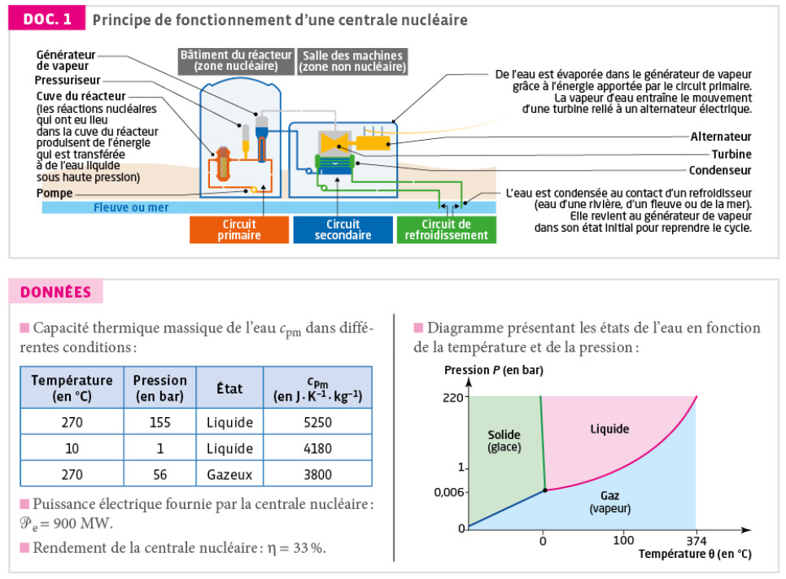
1 · Transferts d'énergie dans le circuit primaire
a. Calculer l'énergie fournie chaque seconde par le réacteur nucléaire et préciser le mode de transfert thermique par lequel cette énergie est échangée avec l'eau du circuit primaire.
b. En analysant les données, justifier le choix d'utiliser de l'eau liquide dans le circuit primaire, ainsi que de travailler à haute pression.
2 · Transferts d'énergie dans le circuit secondaire
L'énergie fournie par le réacteur nucléaire est supposée intégralement transférée au circuit primaire, puis au circuit secondaire.
a. Schématiser les différents transferts d'énergie liés au système {eau du circuit secondaire}. Préciser le signe de chacun des transferts représentés sur ce schéma au cours d'un cycle.
b. Comment varie l'énergie interne ΔU du système {eau du circuit secondaire} au cours d'un cycle ?
c. Montrer que le flux thermique entre le circuit secondaire et le circuit de refroidissement vaut 1,8 GW.
3 · Transferts d'énergie dans le circuit de refroidissement
L'eau du fleuve est récupérée par pompage, puis envoyée dans la canalisation avec un débit volumique constant Dv = 60 m³·s⁻¹. La température de l'eau du fleuve à l'entrée du circuit de refroidissement est θe = 19 °C. Déterminer la température θs de l'eau à la sortie de la canalisation.
1.a Le rendement de la centrale est η = Pe/Pth, avec Pth la puissance thermique fournie par le réacteur, d'où :
L'énergie fournie chaque seconde correspond donc à E = Pth×1 s ≈ 2,73×10⁹ J. Cette énergie est échangée avec l'eau du circuit primaire par conduction (contact direct entre le combustible nucléaire de la cuve du réacteur et l'eau du circuit primaire) et par convection (mise en mouvement de l'eau par la pompe, qui évacue en continu l'énergie reçue).
1.b D'après le tableau de données, à 270 °C, l'eau liquide (à 155 bar) possède une capacité thermique massique cpm = 5250 J·K⁻¹·kg⁻¹, nettement supérieure à celle de l'eau gazeuse à la même température (3800 J·K⁻¹·kg⁻¹ à 56 bar). L'eau liquide peut donc transporter davantage d'énergie thermique, pour une même variation de température et une même masse, que l'eau à l'état gazeux : c'est un meilleur fluide caloporteur.
Or, d'après le diagramme de phase, à une température aussi élevée que 270 °C, l'eau ne reste liquide que si la pression est suffisamment élevée (au-delà de la courbe de vaporisation) : c'est pourquoi le circuit primaire fonctionne à haute pression (155 bar), afin de maintenir l'eau à l'état liquide malgré sa température élevée, et ainsi profiter de sa capacité thermique massique plus grande qu'à l'état gazeux.
2.a (Schéma attendu : le système {eau du circuit secondaire}, entouré de trois flèches — une flèche entrante représentant le transfert thermique Qprimaire reçu du circuit primaire au niveau du générateur de vapeur, une flèche sortante représentant le travail W cédé à la turbine, et une flèche sortante représentant le transfert thermique Qrefroidissement cédé au circuit de refroidissement au niveau du condenseur.) Le système reçoit réellement de l'énergie thermique du circuit primaire : Qprimaire > 0. Il cède réellement du travail à la turbine : W < 0. Il cède réellement de l'énergie thermique au circuit de refroidissement : Qrefroidissement < 0.
2.b Le système {eau du circuit secondaire} fonctionnant de façon cyclique, il retrouve son état initial à la fin de chaque cycle. L'énergie interne étant une fonction d'état, sa variation sur un cycle complet est nulle : ΔU = 0.
2.c En raisonnant en puissances (grandeurs échangées par seconde) et en appliquant le premier principe sur un cycle (ΔU = 0, question b.) :
3. Débit massique de l'eau du fleuve :
Le flux thermique Pf = 1,8 GW (question 2.c) est reçu par cette eau, dont la température passe de θe à θs : Pf = Dm×ceau×(θs−θe), d'où :
L'eau du fleuve ressort donc du circuit de refroidissement environ 7 °C plus chaude qu'à son entrée, ce qui illustre l'impact thermique réel que peut avoir une centrale nucléaire sur le cours d'eau utilisé pour son refroidissement.
Exercice 44 : Bien choisir son matelas de camping (résolution de problème)
Pour partir en camping dans une région froide, mieux vaut être bien équipé.
Quels critères sont importants pour bien choisir son matériel ?
📄 Documents

- Convertis la valeur R du matelas du campeur (Doc 1, en unités US) en résistance thermique SI, à l'aide de la conversion donnée dans les Données.
- Distingue les deux voies de transfert du Doc 2 : la voie « duvet → extérieur » (convection, surface 1,5 m²), dont la résistance thermique totale est celle du sac de couchage plein + celle des vêtements ; et la voie « matelas → sol » (conduction, surface 1 m²), en tenant compte du fait que la couche inférieure du sac de couchage, compressée par le poids du corps, ne conserve que 15 % de sa résistance thermique nominale (Doc 2) — à cette résistance résiduelle s'ajoutent celles du matelas et des vêtements.
- Calcule le flux thermique réel sur chacune des deux voies, avec un écart de température entre le corps (environ 37 °C) et l'extérieur (température donnée dans le Doc 1 ; on pourra assimiler, en première approximation, la température du sol à celle de l'air extérieur).
- Compare chacun des deux flux réels au flux maximal admissible correspondant (respectivement 1/3 et 2/3 de la puissance corporelle totale), et conclus.
1. D'après le Doc 2, le corps humain produit environ 100 W, seuil à ne pas dépasser globalement pour ne pas avoir froid ; la voie de conduction (matelas-sol) en représente 2/3 :
(De même, la voie de convection, duvet-extérieur, représente 1/3, soit Φmax,convection = (1/3)×100 ≈ 33,3 W.)
2. Hypothèses retenues : température du corps Tcorps ≈ 37 °C ; température du sol assimilée à celle de l'air extérieur donnée dans le Doc 1, θext = −5 °C ; soit un écart ΔT = 37 − (−5) = 42 °C = 42 K. Le matelas du campeur, d'après le Doc 1, a une valeur R = 2 (unités US, norme Doc 3), soit en unités SI :
Voie « duvet → extérieur » (convection, S = 1,5 m²) : le sac de couchage n'est pas comprimé sur le dessus, sa résistance thermique nominale s'applique pleinement, en série avec celle des vêtements :
Cette valeur est très supérieure au maximum admissible pour cette voie (33,3 W) : le sac de couchage, seul ou avec les vêtements, n'isole pas suffisamment pour cette température.
Voie « matelas → sol » (conduction, S = 1 m²) : la couche inférieure du sac de couchage est comprimée par le poids du corps et ne conserve que 15 % de sa résistance nominale (Doc 2) ; elle s'ajoute en série à celle du matelas et des vêtements :
Cette valeur dépasse également le maximum admissible pour cette voie (66,7 W, question 1) : le matelas R-value 2, combiné au sac de couchage comprimé, n'isole pas non plus suffisamment le campeur du sol.
Conclusion. Le flux thermique total réellement estimé (96,9 + 88,7 ≈ 186 W) est presque le double de la puissance produite par le corps (100 W) : le matériel du campeur (matelas R-value 2 et sac de couchage utilisé seul) n'est pas adapté à un trek en Laponie avec des températures nocturnes de −5 °C. Le campeur avait raison de s'inquiéter (Doc 1) : il lui faudrait un matelas de valeur R plus élevée (par exemple R ≈ 4, cf. Doc 3, plus proche de la gamme « All-Season »/« Extreme cold ») et/ou un sac de couchage mieux adapté aux températures négatives pour limiter ses pertes thermiques à un niveau soutenable.
(Cette résolution repose sur plusieurs hypothèses simplificatrices — température du sol assimilée à celle de l'air, température corporelle fixée à 37 °C, répartition 1/3-2/3 supposée valable quel que soit l'équipement — qu'il est possible de discuter et d'affiner.)
Exercice 45 : Rendement d'une bouilloire
Depuis les années 1980, la bouilloire électrique a remplacé peu à peu la casserole pour faire bouillir de l'eau.
Quel est le rendement d'une bouilloire électrique ?
📄 Documents
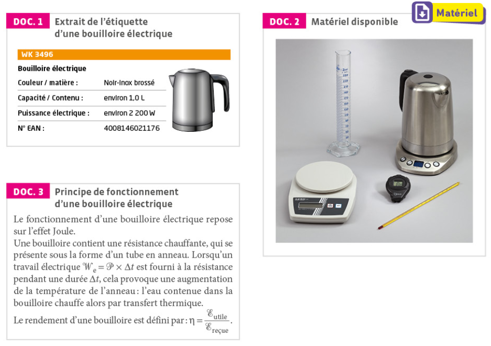
1. D'après le Doc 3, l'énergie reçue par la bouilloire est le travail électrique fourni à la résistance chauffante :
L'énergie utile est celle qui sert réellement à chauffer l'eau, c'est-à-dire la variation de son énergie interne :
En reportant ces deux expressions dans la définition du rendement η = Eutile/Ereçue (Doc 3) :
2. Protocole proposé :
- Mesurer, à l'aide de l'éprouvette graduée, un volume V d'eau (par exemple 500 mL) et en déduire sa masse m = ρeau×V à l'aide de la masse volumique de l'eau (ou peser directement l'eau à l'aide de la balance).
- Mesurer la température initiale θi de l'eau avant de la verser dans la bouilloire.
- Verser l'eau dans la bouilloire, allumer celle-ci et déclencher simultanément le chronomètre.
- Arrêter le chronomètre dès que l'eau entre en ébullition (ou dès l'arrêt automatique de la bouilloire), pour obtenir la durée de chauffe Δt ; relever alors la température finale θf (égale à 100 °C si l'ébullition est atteinte).
- Relever la puissance électrique P indiquée sur l'étiquette de la bouilloire (Doc 1).
- Calculer ΔT = θf − θi, puis le rendement à l'aide de la relation établie en 1.
3. À titre d'exemple, avec une masse d'eau m = 0,50 kg (soit 500 mL) chauffée de θi = 15 °C à θf = 100 °C (ΔT = 85 °C) en une durée Δt = 95 s, avec P = 2200 W (Doc 1) et ceau = 4180 J·K⁻¹·kg⁻¹ :
(Ce résultat est donné à titre d'exemple : la valeur exacte du rendement dépend des mesures réellement effectuées lors de la mise en œuvre du protocole, mais on doit s'attendre à un ordre de grandeur proche de 80 à 90 % pour une bouilloire électrique.)
4. Le rendement de la bouilloire n'est pas égal à 1 pour au moins deux raisons :
- une partie de l'énergie électrique reçue est perdue vers l'extérieur par transfert thermique (à travers les parois de la bouilloire, par convection avec l'air ambiant, voire par évaporation d'un peu d'eau sous forme de vapeur en fin de chauffe), plutôt que d'être intégralement transmise à l'eau ;
- une partie de l'énergie électrique sert à chauffer la bouilloire elle-même (résistance chauffante, parois métalliques, socle) plutôt que l'eau exclusivement : cette énergie, bien qu'elle reste globalement dans le système, n'est pas comptabilisée comme « utile » au sens strict de la définition du rendement, centrée sur l'eau seule.
Capacité thermique massique du cuivre
« J'ai froid aux pieds sur le carrelage, je préfère le parquet ! »
Température au sein d'un igloo
Le sauna
Grandeurs macro / micro
P, θ, ρ décrivent l'état macroscopique du gaz ; elles traduisent l'agitation (T) et les chocs sur les parois (P) des particules à l'échelle microscopique.
Équation d'état
Valable pour un gaz parfait : entités ponctuelles, sans interaction, à faible pression.
Premier principe
Système fermé, au repos macroscopique. Convention : reçu > 0, cédé < 0.
Système incompressible
ΔU > 0 si le système s'échauffe, ΔU < 0 s'il se refroidit.
Trois modes de transfert
- Conduction : sans déplacement de matière (solides)
- Convection : avec déplacement de matière (fluides)
- Rayonnement : ondes électromagnétiques, même dans le vide
Flux & résistance thermique
Rth = e/(λ×S). Résistances en série : elles s'additionnent.
Lois de thermodynamique
La loi de Newton décrit l'évolution exponentielle de la température d'un système incompressible vers celle d'un thermostat. La loi de Stefan-Boltzmann relie le flux radiatif surfacique d'un corps noir à sa température.
- Les grandeurs macroscopiques P, θ, ρ traduisent l'agitation et les chocs des particules à l'échelle microscopique.
- Le modèle du gaz parfait (PV = nRT) est valable pour un gaz dilué à faible pression, sans interaction entre entités ponctuelles.
- L'énergie interne U = Ec,micro + Ep,micro ; premier principe : ΔU = W + Q (reçu > 0, cédé < 0).
- Pour un système incompressible : ΔU = m×c×ΔT.
- Trois modes de transfert thermique : conduction (sans matière), convection (avec matière), rayonnement (même dans le vide).
- ɸ = Q/Δt = (Tc−Tf)/Rth, avec Rth = e/(λ×S), additive en série.
- Loi de Newton : équation différentielle du 1er ordre, solution exponentielle tendant vers Tth.
- Loi de Stefan-Boltzmann : F = σ×T⁴, flux radiatif d'un corps noir.
- Modèle du gaz parfait
- Modèle décrivant le comportement d'un gaz dilué, reliant pression, volume, quantité de matière et température par l'équation d'état P·V = n·R·T.
- Énergie interne U
- Somme des différentes contributions microscopiques à l'énergie d'un système (énergie cinétique d'agitation thermique, énergies d'interaction entre particules, etc.).
- Premier principe de la thermodynamique
- Principe de conservation de l'énergie appliqué à un système thermodynamique : la variation de son énergie interne est égale à la somme des transferts d'énergie (travail, transfert thermique) échangés avec l'extérieur.
- Capacité thermique C
- Grandeur qui relie la variation d'énergie interne d'un système incompressible à sa variation de température : ΔU = C·ΔT.
- Transfert thermique
- Transfert spontané d'énergie entre un système et son environnement, dû à une différence de température, qui s'effectue toujours du corps le plus chaud vers le plus froid.
- Flux thermique φ
- Puissance transférée sous forme de transfert thermique à travers une paroi, exprimée en watts (W).
- Résistance thermique Rth
- Grandeur caractérisant l'aptitude d'une paroi à s'opposer au transfert thermique par conduction ; relie l'écart de température au flux thermique qui la traverse.
- Loi phénoménologique de Newton
- Modèle selon lequel le flux thermique échangé entre un système et un thermostat est proportionnel à l'écart de température entre eux.
- Loi de Stefan-Boltzmann
- Relation entre le flux thermique surfacique émis par rayonnement par un corps noir et sa température : φ = σ·T⁴, avec σ = 5,67×10⁻⁸ W·m⁻²·K⁻⁴ la constante de Stefan-Boltzmann.
- Albédo
- Rapport entre la puissance du rayonnement réfléchi par une surface et la puissance du rayonnement incident qu'elle reçoit ; nombre sans dimension compris entre 0 (surface parfaitement absorbante) et 1 (surface parfaitement réfléchissante).
- Effet de serre
- Réchauffement de la surface terrestre dû à l'absorption, par l'atmosphère, d'une partie du rayonnement infrarouge réémis par le sol, puis à sa réémission partielle vers la surface.
- Loi de Mariotte
- À température constante, le produit de la pression P et du volume V d'une quantité fixée de gaz est constant : P·V = constante.
- Loi de Wien
- Loi selon laquelle le produit de la longueur d'onde d'émission maximale λmax d'un corps noir par sa température T est constant : λmax·T = constante (≈ 2,9×10⁻³ m·K).
- Grandeurs macroscopiques / microscopiques
- Les grandeurs macroscopiques (pression, volume, température) décrivent l'état d'un système à notre échelle ; elles résultent statistiquement du comportement microscopique (position, vitesse) des très nombreuses entités (atomes, molécules) qui le composent.
- Pression P
- Grandeur macroscopique, en pascal (Pa), qui traduit à l'échelle du système les chocs des entités microscopiques sur les parois du récipient qui les contient ; plus les chocs sont fréquents et énergétiques, plus la pression est élevée.
- Température / Agitation thermique
- La température (en kelvin, K) est une mesure macroscopique de l'agitation thermique microscopique désordonnée des entités d'un système ; plus elle est élevée, plus les entités se déplacent rapidement en moyenne.
- Constante des gaz parfaits R
- Constante intervenant dans l'équation d'état du gaz parfait P·V = n·R·T, R ≈ 8,314 Pa·m³·mol⁻¹·K⁻¹ (ou J·mol⁻¹·K⁻¹).
- Volume molaire Vm
- Volume occupé par une mole de gaz dans des conditions de pression et de température données ; pour un gaz parfait, Vm = V/n = R·T/P.
- Chaleur latente (énergie massique de changement d'état) L
- Énergie, en J·kg⁻¹, qu'il faut fournir (ou céder) à l'unité de masse d'un corps pur pour le faire changer d'état à température constante, sans variation de température associée.
- Capacité thermique massique c
- Énergie, en J·kg⁻¹·K⁻¹, qu'il faut fournir à 1 kg d'un système incompressible pour élever sa température de 1 K (ou 1 °C) ; ΔU = m·c·ΔT.
- Système incompressible
- Système (généralement solide ou liquide) dont le volume reste constant au cours de la transformation étudiée ; sa variation d'énergie interne s'écrit alors simplement ΔU = m·c·ΔT.
- Travail W / Transfert thermique Q
- Deux modes d'échange d'énergie entre un système et l'extérieur : le travail W est associé à une action mécanique (force), le transfert thermique Q à une différence de température ; par convention, tous deux sont comptés positivement s'ils sont reçus par le système.
- Conduction thermique
- Mode de transfert thermique se propageant de proche en proche dans la matière (principalement les solides), sans déplacement macroscopique de matière, de la région la plus chaude vers la plus froide.
- Convection thermique
- Mode de transfert thermique dans un fluide, accompagné d'un déplacement macroscopique de matière (courants de convection).
- Rayonnement thermique
- Mode de transfert thermique par émission d'ondes électromagnétiques, ne nécessitant aucun support matériel (fonctionne dans le vide) ; tout corps de température non nulle en émet.
- Corps noir
- Objet idéal qui absorbe intégralement tout rayonnement électromagnétique qu'il reçoit, quelle que soit la longueur d'onde, et dont le rayonnement thermique émis ne dépend que de sa température (lois de Wien et de Stefan-Boltzmann).
- Constante solaire
- Flux thermique surfacique reçu au sommet de l'atmosphère terrestre, perpendiculairement aux rayons solaires : F ≈ 1 368 W·m⁻².
- Régime stationnaire (permanent)
- État dans lequel les grandeurs physiques d'un système (température, flux...) n'évoluent plus au cours du temps ; les flux d'énergie reçus et cédés s'équilibrent alors exactement.
- Constante de temps (temps caractéristique) τ
- Paramètre, en secondes, caractérisant la rapidité d'évolution d'un système suivant une loi exponentielle (ex. refroidissement selon la loi de Newton) ; plus τ est petit, plus l'évolution vers l'état final est rapide.
🖥️ Simulation — Propriétés des gaz
PhET Colorado · Faire varier P, V, T, n et observer les particules à l'échelle microscopique
🖥️ Simulation — Loi de Mariotte
PCCL · Relation entre pression et volume de l'air à température constante
🖥️ Simulation — États de la matière
PhET Colorado · Solide, liquide, gaz : agitation microscopique et changements d'état
🖥️ Simulation — Parc d'énergie
PhET Colorado · Energy Skate Park — conversions d'énergie mécanique
Classées dans l'ordre des onglets du cours (Prérequis → A → B1 → B2 → B3) :
▶ Loi de Mariotte (2nde)
PCCL · Rappel de Seconde
▶ Zéro absolu & Kelvin
e-penser
▶ Loi des gaz parfaits
Khan Academy
▶ Gaz parfaits — exemple 1
Khan Academy
▶ Gaz parfaits — exemple 2
Khan Academy
▶ Gaz parfaits — exemple 3
Khan Academy
▶ Gaz parfaits — exemple 4
Khan Academy
▶ Bilan d'énergie
G. Moreau
▶ Bilan — Thermodynamique
Hatier
▶ Premier principe de thermodynamique
F. Raffin
▶ Résistance thermique
P. Olivier
▶ Flux thermique échangé par convection
F. Raffin
▶ Flux thermique
G. Moreau
▶ Transferts thermiques
G. Moreau
▶ Flux par rayonnement & loi de Stefan
Exercices du manuel :
- Exercices manuel : n°36 p355, n°17 p350, n°21-22-23 p351, n°27 p352, n°30 et n°35 p354 (Partie A)
- Exercices manuel : n°12-13-14 p372, n°29 p376, n°35 p377, n°37-38 p378 (Partie B-I)
- Exercices manuel : n°17 p372, n°28 et n°31 p376, n°43 p381, n°44 p382 (Partie B-II)
- Exercices manuel : n°22 p373, n°41 p379 (loi de Newton), n°39 p378 (Stefan-Boltzmann)
QCM interactifs (Hatier-clic) :
📝 QCM — Prérequis
Hatier-clic · À faire avant la séquence
📝 QCM — Maîtrise des notions
Hatier-clic · Bilan de fin de séquence
Émile Clapeyron (1799-1864), ingénieur et physicien français, a formulé l'équation des gaz parfaits en 1834. La constante des gaz parfaits R a ensuite été précisée par Ludwig Boltzmann (1844-1906, physicien autrichien, théorie cinétique des gaz) et Henri Victor Regnault (1810-1878, physicien et chimiste français) entre 1850 et 1860.
Lord Kelvin (William Thomson, 1824-1907), ingénieur, mathématicien et physicien écossais, a caractérisé le zéro absolu (T = 0 K = −273,15 °C), température minimale théorique où l'agitation microscopique des particules cesse. Cette température n'a jamais été atteinte expérimentalement (record : 270,5 mK au-dessus du zéro absolu), notamment en raison du rayonnement fossile résiduel issu du Big Bang.